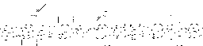

Programming interface for GAlib classes
version 2.4
This document describes the programming interface for the library. The section for each class contains a description of the object's purpose followed by the creator signature and member functions. There are also sections for library constants, typedefs, and function signatures.
see also: library overview, class hierarchy, customization
Table of contents
Global Typedefs and Enumerations
typedef float GAProbability, GAProb
typedef enum _GABoolean {gaFalse, gaTrue} GABoolean, GABool
typedef enum _GAStatus {gaSuccess, gaFailure} GAStatus
typedef unsigned char GABit
Function Prototypes
GABoolean (*GAGeneticAlgorithm::Terminator)(GAGeneticAlgorithm & ga)
GAGenome& (*GAIncrementalGA::ReplacementFunction)(GAGenome &, GAPopulation &)
void (*GAPopulation::Initializer)(GAPopulation &)
void (*GAPopulation::Evaluator)(GAPopulation &)
void (*GAGenome::Initializer)(GAGenome &)
float (*GAGenome::Evaluator)(GAGenome &)
int (*GAGenome::Mutator)(GAGenome &, float)
float (*GAGenome::Comparator)(const GAGenome &, const GAGenome&)
int (*GAGenome::SexualCrossover)(const GAGenome&, const GAGenome&, GAGenome*, GAGenome*)
int (*GAGenome::AsexualCrossover)(const GAGenome&, GAGenome*)
int (*GABinaryEncoder)(float& value, GABit* bits,
unsigned int nbits, float min, float max)
int (*GABinaryDecoder)(float& value, const GABit* bits,
unsigned int nbits, float min, float max)
Parameter Names and Command-Line Options
#define name full name short name default value
gaNminimaxi minimaxi mm int gaDefMiniMaxi = 1
gaNnGenerations number_of_generations ngen int gaDefNumGen = 250
gaNpConvergence convergence_percentage pconv float gaDefPConv = 0.99
gaNnConvergence generations_to_convergence nconv int gaDefNConv = 20
gaNpCrossover crossover_probability pcross float gaDefPCross = 0.9
gaNpMutation mutation_probability pmut float gaDefPMut = 0.01
gaNpopulationSize population_size popsize int gaDefPopSize = 30
gaNnPopulations number_of_populations npop int gaDefNPop = 10
gaNpReplacement replacement_percentage prepl float gaDefPRepl = 0.25
gaNnReplacement replacement_number nrepl int gaDefNRepl = 5
gaNnBestGenomes number_of_best nbest int gaDefNumBestGenomes = 1
gaNscoreFrequency score_frequency sfreq int gaDefScoreFrequency1 = 1
gaNflushFrequency flush_frequency ffreq int gaDefFlushFrequency = 0
gaNscoreFilename score_filename sfile char* gaDefScoreFilename = "generations.dat"
gaNselectScores select_scores sscores int gaDefSelectScores = GAStatistics::Maximum
gaNelitism elitism el GABoolean gaDefElitism = gaTrue
gaNnOffspring number_of_offspring noffspr int gaDefNumOff = 2
gaNrecordDiversity record_diversity recdiv GABoolean gaDefDivFlag = gaFalse
gaNpMigration migration_percentage pmig float gaDefPMig = 0.1
gaNnMigration migration_number nmig int gaDefNMig = 5
Parameters may be specified using the full name strings (for example in parameter files), short name strings (for example on the command line), or explicit member functions (such as those of the genetic algorithm objects). All of the #defined names are simply the full names declared as #defined strings; you can use either the string (e.g. number_of_generations) or the #defined name (e.g. gaNnGenerations), but if you use the #defined name then the compiler will be able to catch your spelling mistakes.
When you specify GAlib arguments on the command line, they must be in name-value pairs. You can use either the long or short name. For example, if my program is called optimizer, the command line for running the program with a population size of 150, mutation rate of 10%, and score filename of evolve.txt would be:
optimizer popsize 150 pmut 0.1 sfile evolve.txt
Global Variables and Global Constants
char* gaErrMsg; // globally defined pointer to current error message
int gaDefScoreFrequency1 = 1; // for non-overlapping populations
int gaDefScoreFrequency2 = 100; // for overlapping populations
float gaDefLinearScalingMultiplier = 1.2;
float gaDefSigmaTruncationMultiplier = 2.0;
float gaDefPowerScalingFactor = 1.0005;
float gaDefSharingCutoff = 1.0;
Random Number Functions
GAlib includes the following functions for generating random numbers:
void GARandomSeed(unsigned s = 0)
int GARandomInt()
int GARandomInt(int low, int high)
double GARandomDouble()
double GARandomDouble(double low, double high)
float GARandomFloat()
float GARandomFloat(float low, float high)
int GARandomBit()
GABoolean GAFlipCoin(float p)
int GAGaussianInt(int stddev)
float GAGaussianFloat(float stddev)
double GAGaussianDouble(double stddev)
double GAUnitGaussian()
If you call it with no argument, the GARandomSeed function uses the current time multiplied by the process ID (on systems that have PIDs) as the seed for a psuedo-random number generator. On systems with no process IDs it uses only the time. You can specify your own random seed if you like by passing a value to this function. Once a seed has been specified, subsequent calls to GARandomSeed with the same value have no effect. Subsequent calls to GARandomSeed with a different value will re-initialize the random number generator using the new value.
The functions that take low and high as argument return a random number from low to high, inclusive. The functions that take no arguments return a value in the interval [0,1]. GAFlipCoin returns a boolean value based on a biased coin toss. If you give it a value of 1 it will return a 1, if you give it a value of 0.75 it will return a 1 with a 75% chance.
The GARandomBit function is the most efficient way to do unbiased coin tosses. It uses the random bit generator described in Numerical Recipes in C.
The Gaussian functions return a random number from a Gaussian distribution with deviation that you specify. The GAUnitGaussian function returns a number from a unit Gaussian distribution with mean 0 and deviation of 1.
GAlib uses a single random number generator for the entire library. You may not change the random number generator on the fly - it can be changed only when GAlib is compiled. See the config.h and random.h header files for details. By default, GAlib uses the ran2 generator described in Numerical Recipes in C.
Error Handling
Exceptions are not used in GAlib version 2.x. However, some GAlib functions return a status value to indicate whether or not their operation was successful. If a function returns an error status, it posts its error message on the global GAlib error pointer, a global string called gaErrMsg.
By default, GAlib error messages are sent immediately to the error stream. You can disable the immediate printing of error messages by passing gaFalse to the ::GAReportErrors function. Passing a value of gaTrue enables the behavior.
If you would like to redirect the error messages to a different stream, use the ::GASetErrorStream function to assign a new stream. The default stream is the system standard error stream, cerr.
Here are the error control functions and variables:
extern char gaErrMsg[];
void GAReportErrors(GABoolean flag);
void GASetErrorStream(ostream&);
GAGeneticAlgorithm
This is an abstract class that cannot be instantiated. Each genetic algorithm, when instantiated, will have default operators defined for it. See the documentation for the specific genetic algorithm type for details.
The base genetic algorithm class keeps track of evolution statistics such as number of mutations, number of crossovers, number of evaluations, best/mean/worst in each generation, and initial/current population statistics. It also defines the terminator, a member function that specifies the stopping criterion for the algorithm.
You can maximize or minimize by calling the appropriate member function. If you derive your own genetic algorithm, remember that users of your algorithm may need either type of optimization.
Statistics can be written to file each generation or periodically by specifying a flush frequency. Generational scores can be recorded each generation or less frequently by specifying a score frequency.
Parameters such as generations-to-completion, crossover probability and mutation probability can be set by member functions, command-line, or from file.
The evolve member function first calls initialize then calls the step member function until the done member function returns gaTrue. It calls the flushScores member as needed when the evolution is complete. If you evolve the genetic algorithm without using the evolve member function, be sure to call initialize before stepping through the evolution. You can use the step member function to evolve a single generation. You should call flushScores when the evolution is finished so that any buffered scores are flushed.
The names of the individual parameter member functions correspond to the #defined string names. You may set the parameters on a genetic algorithm one at a time (for example, using the nGenerations member function), using a parameter list (for example, using the parameters member function with a GAParameterList), by parsing the command line (for example, using the parameters member function with argc and argv), by name-value pairs (for example, using the set member function with a parameter name and value), or by reading a stream or file (for example, using the parameters member with a filename or stream).
see also: GAParameterList
see also: GAStatistics
see also: Terminators
class hierarchy
class GAGeneticAlgorithm : public GAID
typedefs and constants
GABoolean (*GAGeneticAlgorithm::Terminator)(GAGeneticAlgorithm &)
enum { MINIMIZE = -1, MAXIMIZE = 1 };
member function index
static GAParameterList& registerDefaultParameters(GAParameterList&);
void * userData()
void * userData(void *)
void initialize(unsigned int seed=0)
void evolve(unsigned int seed=0)
void step()
GABoolean done()
GAGeneticAlgorithm::Terminator terminator()
GAGeneticAlgorithm::Terminator terminator(GAGeneticAlgorithm::Terminator)
const GAStatistics & statistics() const
float convergence() const
int generation() const
void flushScores()
int minimaxi() const
int minimaxi(int)
int minimize()
int maximize()
int nGenerations() const
int nGenerations(unsigned int)
int nConvergence() const
int nConvergence(unsigned int)
float pConvergence() const
float pConvergence(float)
float pMutation() const
float pMutation(float)
float pCrossover() const
float pCrossover(float)
GAGenome::SexualCrossover crossover(GAGenome::SexualCrossover func);
GAGenome::SexualCrossover sexual() const;
GAGenome::AsexualCrossover crossover(GAGenome::AsexualCrossover func);
GAGenome::AsexualCrossover asexual() const;
const GAPopulation & population() const
const GAPopulation & population(const GAPopulation&)
int populationSize() const
int populationSize(unsigned int n)
int nBestGenomes() const
int nBestGenomes(unsigned int n)
GAScalingScheme & scaling() const
GAScalingScheme & scaling(const GAScalingScheme&)
GASelectionScheme & selector() const
GASelectionScheme & selector(const GASelectionScheme& s)
void objectiveFunction(GAGenome::Evaluator)
void objectiveData(const GAEvalData&)
int scoreFrequency() const
int scoreFrequency(unsigned int frequency)
int flushFrequency() const
int flushFrequency(unsigned int frequency)
char* scoreFilename() const
char* scoreFilename(const char *filename)
int selectScores() const
int selectScores(GAStatistics::ScoreID which)
GABoolean recordDiversity() const
GABoolean recordDiversity(GABoolean flag)
const GAParameterList & parameters()
const GAParameterList & parameters(const GAParameterList &)
const GAParameterList & parameters(int& argc, char** argv, GABoolean flag = gaFalse)
const GAParameterList & parameters(const char* filename, GABoolean flag = gaFalse);
const GAParameterList & parameters(istream&, GABoolean flag = gaFalse);
int set(const char* s, int v)
int set(const char* s, unsigned int v)
int set(const char* s, char v)
int set(const char* s, const char* v)
int set(const char* s, const void* v)
int set(const char* s, double v);
int write(const char* filename)
int write(ostream&)
int read(const char* filename)
int read(ostream&)
member function descriptions
- convergence
- Returns the current convergence. The convergence is defined as the ratio of the Nth previous best-of-generation score to the current best-of-generation score.
- crossover
- Specify the mating method to use for evolution. This can be changed during the course of an evolution. This genetic algorithm uses only sexual crossover.
- done
- Returns gaTrue if the termination criteria have been met, returns gaFalse otherwise. This function simply calls the completion function that was specified using the terminator member function.
- evolve
- Initialize the genetic algorithm then evolve it until the termination criteria have been satisfied. This function first calls initialize then calls the step member function until the done member function returns gaTrue. It calls the flushScores member as needed when the evolution is complete. You may pass a seed to evolve if you want to specify your own random seed.
- flushFrequency
- Use this member function to specify how often the scores should be flushed to disk. A value of 0 means do not write to disk. A value of 100 means to flush the scores every 100 generations.
- flushScores
- Force the genetic algorithm to flush its generational data to disk. If you have specified a flushFrequency of 0 or specified a scoreFilename of nil then calling this function has no effect.
- generation
- Returns the current generation.
- initialize
- Initialize the genetic algorithm. If you specify a seed, this function calls GARandomSeed with that value. If you do not specify a seed, GAlib will choose one for you as described in the random functions section. It then initializes the population and does the first population evaluation.
- nBestGenomes
- Specify how many 'best' genomes to record. For example, if you specify 10, the genetic algorithm will keep the 10 best genomes that it ever encounters. Beware that if you specify a large number here the algorithm will slow down because it must compare the best of each generation with its current list of best individuals. The default is 1.
- nConvergence
- Set/Get the number of generations used for the convergence test.
- nGenerations
- Set/Get the number of generations.
- objectiveData
- Set the objective data member on all individuals used by the genetic algorithm. This can be changed during the course of an evolution.
- objectiveFunction
- Set the objective function on all individuals used by the genetic algorithm. This can be changed during the course of an evolution.
- parameters
- Returns a reference to a parameter list containing the current values of the genetic algorithm parameters.
- parameters(GAParameterList&)
- Set the parameters for the genetic algorithm. To use this member function you must create a parameter list (an array of name-value pairs) then pass it to the genetic algorithm.
- parameters(int& argc, char** argv, GABoolean flag = gaFalse)
- Set the parameters for the genetic algorithm. Use this member function to let the genetic algorithm parse your command line for arguments that GAlib understands. This method decrements argc and moves the pointers in argv appropriately to remove from the list the arguments that it understands. If you pass gaTrue as the third argument then the method will complain about any command-line arguments that are not recognized by this genetic algorithm.
- parameters(char* filename, GABoolean flag = gaFalse)
- parameters(istream&, GABoolean flag = gaFalse)
- Set the parameters for the genetic algorithm. This version of the parameters member function will parse the specified file or stream for parameters that the genetic algorithm understands. If you pass gaTrue as the second argument then the method will complain about any parameters that are not recognized by this genetic algorithm.
- pConvergence
- Set/Get the convergence percentage. The convergence is defined as the ratio of the Nth previous best-of-generation score to the current best-of-generation score. N is defined by the nConvergence member function.
- pCrossover
- Set/Get the crossover probability.
- pMutation
- Set/Get the mutation probability.
- population
- Set/Get the population. Returns a reference to the current population.
- populationSize
- Set/Get the population size. This can be changed during the course of an evolution.
- recordDiversity
- Convenience function for specifying whether or not to calculate diversity. Since diversity calculations require comparison of each individual with every other, recording this statistic can be expensive. The default is gaFalse (diversity is not recorded).
- registerDefaultParameters
- Each genetic algorithm defines this member function to declare the parameters that work with it. Pass a parameter list to this function and this function will configure the list with the default parameter list and values for the genetic algorithm class from which you called it. This is a statically defined function, so invoke it using the class name of the genetic algorithm whose parameters you want to use, for example, GASimpleGA::registerDefaultParameters(list). The default parameters for the base genetic algorithm class are:
- flushFrequency
- minimaxi
- nBestGenomes
- nGenerations
- nConvergence
- pConvergence
- pCrossover
- pMutation
- populationSize
- recordDiversity
- scoreFilename
- scoreFrequency
- selectScores
- scaling
- Set/Get the scaling scheme. The specified scaling scheme must be derived from the GAScalingScheme class. This can be changed during the course of an evolution.
- scoreFilename
- Specify the name of the file to which the scores should be recorded.
- scoreFrequency
- Specify how often the generational scores should be recorded. The default depends on the type of genetic algorithm that you are using. You can record mean, max, min, stddev, and diversity for every n generations.
- selector
- Set/Get the selection scheme for the genetic algorithm. The selector is used to pick individuals from a population before mating and mutation occur. This can be changed during the course of an evolution.
- selectScores
- This function is used to specify which scores should be saved to disk. The argument is the logical OR of the following values: Mean, Maximum, Minimum, Deviation, Diversity (all defined in the scope of the GAStatistics object). To record all of the scores, pass GAStatistics::AllScores. When written to file, the format is as follows:
generation TAB mean TAB max TAB min TAB deviation TAB diversity NEWLINE
- set
- Set individual parameters for the genetic algorithm. The first argument should be the full- or short-name of the parameter you wish to set. The second argument is the value to which you would like to set the parameter.
- statistics
- Returns a reference to the statistics object in the genetic algorithm. The statistics object maintains information such as best, worst, mean, and standard deviation, and diversity of each generation as well as a separate population with the best individuals ever encountered by the genetic algorithm.
- step
- Evolve the genetic algorithm for one generation.
- terminator
- Set/Get the termination function. The genetic algorithm is complete when the completion function returns gaTrue. The function must have the proper signature.
- userData
- Set/Get the userData member of the genetic algorithm. This member is a generic pointer to any information that needs to be stored with the genetic algorithm.
GASimpleGA (non-overlapping populations)
This genetic algorithm is the 'simple' genetic algorithm that Goldberg describes in his book. It uses non-overlapping populations. When you create a simple genetic algorithm, you must specify either an individual or a population of individuals. The new genetic algorithm will clone the individual(s) that you specify to make its own population. You can change most of the genetic algorithm behaviors after creation and during the course of the evolution.
The simple genetic algorithm creates an initial population by cloning the individual or population you pass when you create it. Each generation the algorithm creates an entirely new population of individuals by selecting from the previous population then mating to produce the new offspring for the new population. This process continues until the stopping criteria are met (determined by the terminator).
Elitism is optional. By default, elitism is on, meaning that the best individual from each generation is carried over to the next generation. To turn off elitism, pass gaFalse to the elitist member function.
The score frequency for this genetic algorithm defaults to 1 (it records the best-of-generation every generation). The default scaling is Linear, the default selection is RouletteWheel.
see also: GAGeneticAlgorithm
class hierarchy
class GASimpleGA : public GAGeneticAlgorithm
constructors
GASimpleGA(const GAGenome&)
GASimpleGA(const GAPopulation&)
GASimpleGA(const GASimpleGA&)
member function index
static GAParameterList& registerDefaultParameters(GAParameterList&);
GASimpleGA & operator++()
GABoolean elitist() const
GABoolean elitist(GABoolean flag)
member function descriptions
- elitist
- Set/Get the elitism flag. If you specify gaTrue, the genetic algorithm will copy the best individual from the previous population into the current population if no individual in the current population is any better.
- operator++
- The increment operator evolves the genetic algorithm's population by one generation by calling the step member function.
- registerDefaultParameters
- This function adds to the specified list parameters that are of interest to this genetic algorithm. The default parameters for the simple genetic algorithm are the parameters for the base genetic algorithm class plus the following:
GASteadyStateGA (overlapping populations)
This genetic algorithm is similar to the algorithms described by DeJong. It uses overlapping populations with a user-specifiable amount of overlap. The algorithm creates a population of individuals by cloning the genome or population that you pass when you create it. Each generation the algorithm creates a temporary population of individuals, adds these to the previous population, then removes the worst individuals in order to return the population to its original size.
You can select the amount of overlap between generations by specifying the pReplacement parameter. This is the percentage of the population that should be replaced each generation. Newly generated offspring are added to the population, then the worst individuals are destroyed (so the new offspring may or may not make it into the population, depending on whether they are better than the worst in the population).
If you specify a replacement percentage, then that percentage of the population will be replaced each generation. Alternatively, you can specify a number of individuals (less than the number in the population) to replace each generation. You cannot specify both - in a parameter list containing both parameters, the latter is used.
The score frequency for this genetic algorithm defaults to 100 (it records the best-of-generation every 100th generation). The default scaling is Linear, the default selection is RouletteWheel.
see also: GAGeneticAlgorithm
class hierarchy
class GASteadyStateGA : public GAGeneticAlgorithm
constructors
GASteadyStateGA(const GAGenome&)
GASteadyStateGA(const GAPopulation&)
GASteadyStateGA(const GASteadyStateGA&)
member function index
static GAParameterList& registerDefaultParameters(GAParameterList&);
GASteadyStateGA & operator++()
float pReplacement() const
float pReplacement(float percentage)
int nReplacement() const
int nReplacement(unsigned int)
member function descriptions
- nReplacement
- Specify a number of individuals to replace each generation. When you specify a number of individuals to replace, the pReplacement value is set to 0.
- operator++
- The increment operator evolves the genetic algorithm's population by one generation by calling the step member function.
- pReplacement
- Specify a percentage of the population to replace each generation. When you specify a replacement percentage, the nReplacement value is set to 0.
- registerDefaultParameters
- This function adds to the specified list parameters that are of interest to this genetic algorithm. The default parameters for the steady-state genetic algorithm are the parameters for the base genetic algorithm class plus the following:
- pReplacement
- nReplacement
GAIncrementalGA (overlapping populations with 1 or 2 children per generation)
This genetic algorithm is similar to those based on the GENITOR model. It uses overlapping populations, but very little overlap (only one or two individuals get replaced each generation). The default replacement scheme is WORST. A replacement function is required only if you use CUSTOM or CROWDING as the replacement scheme. You can do DeJong-style crowding by specifying a distance function with the CROWDING option. (for best DeJong-style results, derive your own genetic algorithm)
You can specify the number of children that are generated in each 'generation' by using the nOffspring member function. Since this genetic algorithm is based on a two-parent crossover model, the number of offspring must be either 1 or 2. The default is 2.
Use the replacement method to specify which type of replacement the genetic algorithm should use. The replacement strategy determines how the new children will be inserted into the population. If you want the new child to replace one of its parents, use the Parent strategy. If you want the child to replace a random population member, use the Random strategy. If you want the child to replace the worst population member, use the Worst strategy.
If you specify CUSTOM or CROWDING you must also specify a replacement function with the proper signature. This function is used to pick which genome will be replaced. The first argument passed to the replacement function is the individual that is supposed to go into the population. The second argument is the population into which the individual is supposed to go. The replacement function should return a reference to the genome that the individual should replace. If no replacement should take place, the replacement function should return a reference to the individual.
The score frequency for this genetic algorithm defaults to 100 (it records the best-of-generation every 100th generation). The default scaling is Linear, the default selection is RouletteWheel.
see also: GAGeneticAlgorithm
class hierarchy
class GAIncrementalGA : public GAGeneticAlgorithm
typedefs and constants
GAGenome& (*GAIncrementalGA::ReplacementFunction)(GAGenome &, GAPopulation &)
enum ReplacementScheme {
RANDOM = GAPopulation::RANDOM,
BEST = GAPopulation::BEST,
WORST = GAPopulation::WORST,
CUSTOM = -30,
CROWDING = -30,
PARENT = -10
};
constructors
GAIncrementalGA(const GAGenome&)
GAIncrementalGA(const GAPopulation&)
GAIncrementalGA(const GAIncrementalGA&)
member function index
static GAParameterList& registerDefaultParameters(GAParameterList&);
GASteadyStateGA & operator++()
ReplacementScheme replacement()
ReplacementScheme replacement(ReplacementScheme, ReplacementFunction f = NULL)
int nOffspring() const
int nOffspring(unsigned int n)
member function descriptions
- nOffspring
- The incremental genetic algorithm can produce either one or two individuals each generation. Use this member function to specify how many individuals you would like.
- operator++
- The increment operator evolves the genetic algorithm's population by one generation by calling the step member function.
- registerDefaultParameters
- This function adds to the specified list parameters that are of interest to this genetic algorithm. The default parameters for the incremental genetic algorithm are the parameters for the base genetic algorithm class plus the following:
- replacement
- Specify a replacement method. The scheme can be one of
- GAIncrementalGA::RANDOM
- GAIncrementalGA::BEST
- GAIncrementalGA::WORST
- GAIncrementalGA::CUSTOM
- GAIncrementalGA::CROWDING
- GAIncrementalGA::PARENT
If you specify custom or crowding replacement then you must also specify a function. The replacement function takes two arguments: the individual to insert and the population into which it will be inserted. The replacement function should return a reference to the genome that should be replaced. If no replacement should take place, the replacement function should return a reference to the individual passed to it.
GADemeGA (parallel populations with migration)
This genetic algorithm has multiple, independent populations. It creates the populations by cloning the genome or population that you pass when you create it.
Each population evolves using a steady-state genetic algorithm, but each generation some individuals migrate from one population to another. The migration algorithm is deterministic stepping-stone; each population migrates a fixed number of its best individuals to its neighbor. The master population is updated each generation with best individual from each population.
If you want to experiment with other migration methods, derive a new class from this one and define a new migration operator. You can change the evolution behavior by defining a new step method in a derived class.
see also: GAGeneticAlgorithm
class hierarchy
class GADemeGA : public GAGeneticAlgorithm
typedefs and constants
enum { ALL= -1 };
constructors
GADemeGA(const GAGenome&)
GADemeGA(const GAPopulation&)
GADemeGA(const GADemeGA&)
member function index
static GAParameterList& registerDefaultParameters(GAParameterList&);
void migrate()
GADemeGA & operator++()
const GAPopulation& population(unsigned int i) const
const GAPopulation& population(int i, const GAPopulation&)
int populationSize(unsigned int i) const
int populationSize(int i, unsigned int n)
int nReplacement(unsigned int i) const
int nReplacement(int i, unsigned int n)
int nMigration() const
int nMigration(unsigned int i)
int nPopulations() const
int nPopulations(unsigned int i)
const GAStatistics& statistics() const
const GAStatistics& statistics(unsigned int i) const
member function descriptions
- nMigration
- Specify the number of individuals to migrate each generation. Each population will migrate this many of its best individuals to the next population (the stepping-stone migration model). The individuals replace the worst individuals in the receiving population.
- nReplacement
- Specify a number of individuals to replace each generation. When you specify a number of individuals to replace, the pReplacement value is set to 0. The first argument specifies which population should be modified. Use GADemeGA::ALL to apply to all populations.
- operator++
- The increment operator evolves the genetic algorithm's population by one generation by calling the step member function.
- pReplacement
- Specify a percentage of the population to replace each generation. When you specify a replacement percentage, the nReplacement value is set to 0. The first argument specifies which population should be modified. Use GADemeGA::ALL to apply to all populations.
- registerDefaultParameters
- This function adds parameters to the specified list that are of interest to this genetic algorithm. The default parameters for the deme genetic algorithm are the parameters for the base genetic algorithm class plus the following:
Terminators
Completion functions are used to determine whether or not a genetic algorithm is finished. The done member function simply calls the completion function to determine whether or not the genetic algorithm should continue. The predefined completion functions use generation and convergence to determine whether or not the genetic algorithm is finished.
The completion function returns gaTrue when the genetic algorithm should finish, and gaFalse when the genetic algorithm should continue.
In this context, convergence refers to the the similarity of the objective scores, not similarity of underlying genetic structure. The built-in convergence measures use the best-of-generation scores to determine whether or not the genetic algorithm has plateaued.
GABoolean GAGeneticAlgorithm::TerminateUponGeneration(GAGeneticAlgorithm &)
GABoolean GAGeneticAlgorithm::TerminateUponConvergence(GAGeneticAlgorithm &)
GABoolean GAGeneticAlgorithm::TerminateUponPopConvergence(GAGeneticAlgorithm &)
- TerminateUponGeneration
- This function compares the current generation to the specified number of generations. If the current generation is less than the requested number of generations, it returns gaFalse. Otherwise, it returns gaTrue.
- TerminateUponConvergence
- This function compares the current convergence to the specified convergence value. If the current convergence is less than the requested convergence, it returns gaFalse. Otherwise, it returns gaTrue.
Convergence is a number between 0 and 1. A convergence of 1 means that the nth previous best-of-generation is equal to the current best-of-generation. When you use convergence as a stopping criterion you must specify the convergence percentage and you may specify the number of previous generations against which to compare. The genetic algorithm will always run at least this many generations.
- TerminateUponPopConvergence
- This function compares the population average to the score of the best individual in the population. If the population average is within pConvergence of the best individual's score, it returns gaTrue. Otherwise, it returns gaFalse.
For details about how to write your own termination function, see the customizations page.
Replacement Schemes
The replacement scheme is used by the incremental genetic algorithm to determine how a new individual should be inserted into a population. Valid replacement schemes include:
GAIncrementalGA::RANDOM
GAIncrementalGA::BEST
GAIncrementalGA::WORST
GAIncrementalGA::CUSTOM
GAIncrementalGA::CROWDING
GAIncrementalGA::PARENT
In general, replace worst produces the best results. Replace parent is useful for basic speciation, and custom replacement can be used when you want to do your own type of speciation.
If you specify CUSTOM or CROWDING replacement then you must also specify a replacement function. The replacement function takes as arguments an individual and the population into which the individual should be placed. It returns a reference to the genome that the individual should replace. If the individual should not be inserted into the population, the function should return a reference to the individual.
Any replacement function must have the following function prototype:
typedef GAGenome& (*GAIncrementalGA::ReplacementFunction)(GAGenome &, GAPopulation &);
The first argument is the genome that will be inserted into the population, the second argument is the population into which the genome should be inserted. The function should return a reference to the genome that will be replaced. If no replacement occurs, the function should return a reference to the original genome.
For details about how to write your own replacement function, see the customizations page.
GAEvalData
The evaluation data object is a generic base class for genome- and/or population-specific data. Whereas the userData member of the genome is shared by all genomes in a population, the evalData member is unique to each genome. The base class defines the copy/clone interface for the evaluation data object. Your derived classes should use this mechanism. Any derived class must define a clone and copy member function. These will be called by the base class when the evaluation data is cloned/copied by the genomes/populations.
class hierarchy
class GAEvalData : public GAID
constructors
GAEvalData()
GAEvalData(const GAEvalData&)
member functions
GAEvalData* clone() const
void copy(const GAEvalData&)
GAGenome
The genome is a virtual base class and cannot be instantiated. It defines a number of constants and function prototypes specific to the genome and its derived classes.
The dimension is used to specify which dimension is being referred to in multi-dimensional genomes. The clone method specifies whether to clone the entire genome (a new genome with contents identical to the original will be created) or just the attributes of the genome (a new genome with identical characteristics will be created). In both cases the caller is responsible for deleting the memory allocated by the clone member function. The resize constants are used when specifying a resizable genome's resize behavior.
The genetic operators for genomes are functions that take generic genomes as their arguments. This makes it possible to define new behaviors for existing genome classes without deriving a new class. The genetic operators are defined with the following prototypes:
Instructions for deriving your own genome class are in the customization page.
class hierarchy
class GAGenome : public GAID
typedefs and constants
enum GAGenome::Dimension { LENGTH, WIDTH, HEIGHT, DEPTH }
enum GAGenome::CloneMethod { CONTENTS, ATTRIBUTES }
enum { FIXED_SIZE = -1, ANY_SIZE = -10 }
float (*GAGenome::Evaluator)(GAGenome &)
void (*GAGenome::Initializer)(GAGenome &)
int (*GAGenome::Mutator)(GAGenome &, float)
float (*GAGenome::Comparator)(const GAGenome &, const GAGenome&)
int (*GAGenome::SexualCrossover)(const GAGenome&, const GAGenome&, GAGenome*, GAGenome*);
int (*GAGenome::AsexualCrossover)(const GAGenome&, GAGenome*);
member function index
virtual void copy(const GAGenome & c)
virtual GAGenome * clone(CloneMethod flag = CONTENTS)
float score(GABoolean flag = gaFalse)
float score(float s)
int nevals()
float evaluate(GABoolean flag = gaFalse)
GAGenome::Evaluator evaluator() const
GAGenome::Evaluator evaluator(GAGenome::Evaluator func)
void initialize()
GAGenomeInitializer initializer() const
GAGenomeInitializer initializer(GAGenome::Initializer func)
int mutate(float pmutation)
GAGenome::Mutator mutator() const
GAGenome::Mutator mutator(GAGenome::Mutator func)
float compare(const GAGenome& g) const
GAGenome::Comparator comparator() const
GAGenome::Comparator comparator(GAGenome::Comparator c)
GAGenome::SexualCrossover crossover(GAGenome::SexualCrossover func)
GAGenome::SexualCrossover sexual()
GAGenome::AsexualCrossover crossover(GAGenome::AsexualCrossover func)
GAGenome::AsexualCrossover asexual()
GAGeneticAlgorithm * geneticAlgorithm() const
GAGeneticAlgorithm * geneticAlgorithm(GAGeneticAlgorithm &)
void * userData() const
void * userData(void * data)
GAEvalData * evalData() const
GAEvalData * evalData(void * data)
virtual int read(istream &)
virtual int write(ostream &) const
virtual int equal(const GAGenome &) const
virtual int notequal(const GAGenome &) const
These operators call the corresponding virtual members so that they will work on any properly derived genome class.
friend int operator==(const GAGenome&, const GAGenome&)
friend int operator!=(const GAGenome&, const GAGenome&)
friend ostream & operator<<(ostream&, const GAGenome&)
friend istream & operator>>(istream&, GAGenome&)
member function descriptions
- clone
- This method allocates space for a new genome whereas the copy method uses the space of the genome to which it belongs.
- compare
- Compare two genomes. The comparison can be genotype- or phenotype-based. The comparison returns a value greater than or equal to 0. 0 means the two genomes are identical (no diversity). The exact meaning of the comparison is up to you.
- comparator
- Set/Get the comparison method. The comparator must have the correct signature.
- copy
- The copy member function is called by the base class' operator= and clone members. You can use it to copy the contents of a genome into an existing genome.
- crossover
- Each genome class can define its preferred mating method. Use this method to assign the preferred crossover for a genome instance.
- equal
- notequal
- 'equal' and 'notequal' are genome-specific. See the documentation for each genome class for specific details about what 'equal' means. For example, genomes that have identical contents but different allele sets may or may not be considered equal. By default, notequal just calls the equal function, but you can override this in derived classes if you need to optimize the comparison.
- evalData
- Set/Get the object used to store genome-specific evaluation data. Each genome owns its own evaluation data object; cloning a genome clones the evaluation data as well.
- evaluate
- Invoke the genome's evaluation function. If you call this member with gaTrue, the evaluation function is called no matter what (assuming one has been assigned to the genome). By default, the argument to this function is gaFalse, so the genome's evaluation function is called only if the state of the genome has not changed since the last time the evaluator was invoked.
- evaluator
- Set/Get the function used to evaluate the genome.
- geneticAlgorithm
- The member function returns a pointer to the genetic algorithm that 'owns' the genome. If this function returns nil then the genome has no genetic algorithm owner.
- initialize
- Calls the initialization function for the genome.
- initializer
- Set/Get the initialization method. The initializer must have the correct signature.
- mutate
- Calls the mutation method for the genome. The value is typically the mutation likliehood, but the exact interpretation of this value is up to the designer of the mutation method.
- mutator
- Set/Get the mutation method. The mutator must have the correct signature.
- nevals
- Returns the number of objective function evaluations since the genome was initialized.
- operator==
- operator!=
- operator<<
- operator>>
- These methods call the associated virtual member functions. They can be used on any generic genome. If the derived class was properly defined, the appropriate derived functions will be called and the functions will operate on the derived classes rather than the base class.
- read
- Fill the genome with the data read from the specified stream.
- sexual
- asexual
- Returns a pointer to the preferred mating method for this genome. If this function returns nil, no mating method has been defined for the genome. The genetic algorithm object has ultimate control over the mating method that is actually used in the evolution.
- score
- Returns the objective score of the genome using the objective function assigned to the genome. If no objective function has been assigned and no score has been set, a score of 0 will be returned. If the score function is called with an argument, the genome's objective score is set to that value (useful for population-based objective functions in which the population object does the evaluations).
- userData
- Each genome contains a generic pointer to user-specifiable data. Use this member function to set/get that pointer. Notice that cloning a genome will cause the cloned genome to refer to the same user data pointer as the original; the user data is not cloned as well. So all genomes in a population refer to the same user data.
- write
- Send the contents of the genome to the specified stream.
GAListGenome<T>
The list genome is a template class. It is derived from the GAGenome class as well as the GAList<> class. It can be used for order-based representations or variable length sequences as well as traditional applications of lists.
You must define an initialization operator for this class. The default initializer is NoInitializer - if you do not assign an initialization operator then you'll get errors about no initializer defined when you try to initialize the genome.
see also: GAList
see also: GAGenome
class hierarchy
class GAListGenome<T> : public GAList<T>, public GAGenome
constructors
GAListGenome(GAGenome::Evaluator objective = NULL, void * userData = NULL)
GAListGenome(const GAListGenome<T> &)
genetic operators for this class
GAListGenome<>::DestructiveMutator
GAListGenome<>::SwapMutator
GAListGenome<>::OnePointCrossover
GAListGenome<>::PartialMatchCrossover
GAListGenome<>::OrderCrossover
GAListGenome<>::CycleCrossover
default genetic operators
initialization: GAGenome::NoInitializer
comparison: GAGenome::NoComparator
mutation: GAListGenome<>::SwapMutator
crossover: GAListGenome<>::OnePointCrossover
GATreeGenome<T>
The tree genome is a template class. It is derived from the GAGenome class as well as the GATree<> class. The tree genome can be used for direct manipulation of tree objects. It can be used to represent binary trees as well as non-binary trees.
You must define an initialization operator for this class. The default initializer is NoInitializer - if you do not assign an initialization operator then you'll get errors about no initializer defined when you try to initialize the genome.
see also: GATree
see also: GAGenome
class hierarchy
class GATreeGenome<T> : public GATree<T>, public GAGenome
constructors
GATreeGenome(GAGenome::Evaluator objective = NULL, void * userData = NULL)
GATreeGenome(const GATreeGenome<T> &)
genetic operators for this class
GATreeGenome<>::DestructiveMutator
GATreeGenome<>::SwapSubtreeMutator
GATreeGenome<>::SwapNodeMutator
GATreeGenome<>::OnePointCrossover
default genetic operators
initialization: GAGenome::NoInitializer
comparison: GAGenome::NoComparator
mutation: GATreeGenome<>::SwapSubtreeMutator
crossover: GATreeGenome<>::OnePointCrossover
GAStringGenome
The string genome can be used for order-based applications, variable length string applications, or non-binary allele set alphabets. The allele set defines the possible values that each element in the string may assume.
The string genome is a specialization of the array genome with alleles. The specialization is of type char. You must create an allele set or array of allele sets before you can instantiate this genome.
If you create a string genome using a single allele set, each element in the genome will use that allele set to determine its value. If you create a string genome using an allele set array, the string will have a length equal to the number of elements in the array and each element of the string will be governed by the allele set corresponding to its location in the string.
To use the string genome in your code, you must include the string genome header file in each of your files that uses the string genome. You must also include the string genome source file (it contains template specialization code) in one (and only one) of your source files. Including the string genome source file will force the compiler to use the string specializations. If you do not include the string genome source file you will get the generic array routines instead (and some of the allele methods will not work as expected).
see also: GA1DArrayAlleleGenome
see also: GAAlleleSet
see also: GAAlleleSetArray
class hierarchy
typedef GAAlleleSet<char> GAStringAlleleSet
typedef GAAlleleSetCore<char> GAStringAlleleSetCore
typedef GAAlleleSetArray<char> GAStringAlleleSetArray
typedef GA1DArrayAlleleGenome<char> GAStringGenome
constructors
GAStringGenome(unsigned int length,
const GAStringAlleleSet &,
GAGenome::Evaluator objective = NULL,
void * userData = NULL)
GAStringGenome(const GAStringAlleleSetArray &,
GAGenome::Evaluator objective = NULL,
void * userData = NULL)
GAStringGenome(const GAStringGenome&)
genetic operators for this class
GAStringGenome::UniformInitializer
GAStringGenome::OrderedInitializer
GAStringGenome::FlipMutator
GAStringGenome::SwapMutator
GAStringGenome::UniformCrossover
GAStringGenome::EvenOddCrossover
GAStringGenome::OnePointCrossover
GAStringGenome::TwoPointCrossover
GAStringGenome::PartialMatchCrossover
GAStringGenome::OrderCrossover
GAStringGenome::CycleCrossover
default genetic operators
initialization: GAStringGenome::UniformInitializer
comparison: GAStringGenome::ElementComparator
mutation: GAStringGenome::FlipMutator
crossover: GAStringGenome::UniformCrossover
GARealGenome
The real number genome was designed to be used for applications whose representation requires an array of (possibly bounded) real number parameters. The elements of the array can assume bounded values, discretized bounded values, or enumerated values, depending on the type of allele set that is used to create the genome. You can mix the bounding within the genome by specifying an appropriate array of allele sets. The allele set defines the possible values that each element in the genome may assume.
The real number genome is a specialization of the array genome with alleles. The specialization is of type float. You must create an allele set or array of allele sets before you can instantiate this genome.
If you create a real number genome using a single allele set, each element in the genome will use that allele set to determine its value. If you create a real number genome using an allele set array, the genome will have a length equal to the number of elements in the array and each element of the real number will be governed by the allele set corresponding to its location in the genome.
To use the real genome in your code, you must include the real genome header file in each of your files that uses the real genome. You must also include the real genome source file (it contains template specialization code) in one (and only one) of your source files. Including the real genome source file will force the compiler to use the real specializations. If you do not include the real genome source file you will get the generic array routines instead (and some of the allele methods will not work as expected).
see also: GA1DArrayAlleleGenome
see also: GAAlleleSet
see also: GAAlleleSetArray
class hierarchy
typedef GAAlleleSet<float> GARealAlleleSet
typedef GAAlleleSetCore<float> GARealAlleleSetCore
typedef GAAlleleSetArray<float> GARealAlleleSetArray
typedef GA1DArrayAlleleGenome<float> GARealGenome
constructors
GARealGenome(unsigned int length,
const GARealAlleleSet &,
GAGenome::Evaluator objective = NULL,
void * userData = NULL)
GARealGenome(const GARealAlleleSetArray &,
GAGenome::Evaluator objective = NULL,
void * userData = NULL)
GARealGenome(const GARealGenome&)
genetic operators for this class
GARealGenome::UniformInitializer
GARealGenome::OrderedInitializer
GARealGenome::FlipMutator
GARealGenome::SwapMutator
GARealGaussianMutator
GARealGenome::UniformCrossover
GARealGenome::EvenOddCrossover
GARealGenome::OnePointCrossover
GARealGenome::TwoPointCrossover
GARealGenome::PartialMatchCrossover
GARealGenome::OrderCrossover
GARealGenome::CycleCrossover
GARealBlendCrossover
GARealArithmeticCrossover
default genetic operators
initialization: GARealGenome::UniformInitializer
comparison: GARealGenome::ElementComparator
mutation: GARealGaussianMutator
crossover: GARealGenome::UniformCrossover
GABin2DecGenome
This genome is an implementation of the traditional method for converting binary strings to decimal values. It contains a mechanism for customized encoding of the bit string; binary-to-decimal and one form of Gray coding are built in to the library. The default is binary-to-decimal mapping (counting in base 2). To use this genome, you must create a mapping of bits to decimal values by specifying how many bits will be used to represent what bounded numbers. The binary-to-decimal genome is derived from the 1DBinaryStringGenome class.
You must create a phenotype before you can instantiate this genome. The phenotype defines how bits should map into decimal values and vice versa. A single binary-to-decimal phenotype contains the number of bits used to represent the decimal value and the minimum and maximum decimal values to which the set of bits will map.
see also: GA1DBinaryStringGenome
see also: GABin2DecPhenotype
see also: GACrossover
class hierarchy
class GABin2DecGenome : public GA1DBinaryStringGenome
constructors
GABin2DecGenome(const GABin2DecPhenotype &,
GAGenome::Evaluator objective = NULL,
void * userData = NULL)
GABin2DecGenome(const GABin2DecGenome&)
member function index
const GABin2DecPhenotype& phenotypes(const GABin2DecPhenotype &)
const GABin2DecPhenotype& phenotypes() const
int nPhenotypes() const
float phenotype(unsigned int n) const
float phenotype(unsigned int n, float value)
void encoder(GABinaryEncoder)
void decoder(GABinaryDecoder)
member function descriptions
- encoder
- decoder
- Use these member functions to set the encoder/decoder for the genome. These functions determine what method will be used for converting the binary bits to decimal numbers. The functions that you specify here must have the proper signature.
- nPhenotype
- Returns the number of phenotypes (i.e. the number of decimal values represented) in the genome.
- phenotypes
- Set/Get the mapping from binary to decimal numbers.
- phenotype
- Set/Get the specified phenotype.
default genetic operators
initialization: GA1DBinaryStringGenome::UniformInitializer
comparison: GA1DBinaryStringGenome::BitComparator
mutation: GA1DBinaryStringGenome::FlipMutator
crossover: GA1DBinaryStringGenome::OnePointCrossover
de/encoding: GABinaryEncode/GABinaryDecode
additional information
Conversion functions are defined for transforming strings of bits to decimal values and vice versa. The function prototypes for the encoding (decimal-to-binary) and decoding (binary-to-decimal) are defined as follows:
typedef int (*GABinaryEncoder)(float& value, GABit* bits,
unsigned int nbits, float min, float max);
typedef int (*GABinaryDecoder)(float& value, const GABit* bits,
unsigned int nbits, float min, float max);
The library includes the following binary-to-decimal/decimal-to-binary converters:
- GABinaryEncode/GABinaryDecode
- Convert using a binary coding scheme.
- GAGrayEncode/GAGrayDecode
- Convert using a Gray coding scheme.
GA1DBinaryStringGenome
The binary string genome is derived from the GABinaryString and GAGenome classes. It is a string of 1s and 0s whose length may be fixed or variable.
The genes in this genomes are bits. The alleles for each bit are 0 and 1.
see also: GABinaryString
see also: GAGenome
class hierarchy
class GA1DBinaryStringGenome : public GABinaryString, public GAGenome
constructors
GA1DBinaryStringGenome(unsigned int x,
GAGenome::Evaluator objective = NULL,
void * userData = NULL)
GA1DBinaryStringGenome(const GA1DBinaryStringGenome&)
member function index
short gene(unsigned int x = 0) const
short gene(unsigned int, short value)
int length() const
int length(int l)
int resize(int x)
int resizeBehaviour() const
int resizeBehaviour(unsigned int minx, unsigned int maxx)
void copy(const GA1DBinaryStringGenome &,
unsigned int xdest, unsigned int xsrc, unsigned int length)
void set(unsigned int x, unsigned int length)
void unset(unsigned int x, unsigned int length)
member function descriptions
- copy
- Copy the specified bits from the designated genome.
- gene
- Set/Get the specified bit.
- length
- Set/Get the length of the bit string.
- resize
- Set the length of the bit string.
- resizeBehaviour
- Set/Get the resize behavior. The min value specifies the minimum allowable length, the max value specifies the maximum allowable length. If min and max are equal, the genome is not resizable.
Use the resizeBehaviour and resize member functions to control the size of the genome. The default behavior is fixed size. Using the resizeBehaviour method you can specify minimum and maximum values for the size of the genome. If you specify minimum and maximum as the same values then fixed size is assumed. If you use the resize method to specify a size that is outside the bounds set earlier using resizeBehaviour, the bounds will be 'stretched' to accommodate the value you specify with resize. Conversely, if the values you specify with resizeBehaviour conflict with the genome's current size, the genome will be resized to accommodate the new values.
When resizeBehaviour is called with no arguments, it returns the maximum size if the genome is resizable, or GAGenome::FIXED_SIZE if the size is fixed.
- set
- unset
- Set/Unset the bits in the specified range. If you specify a range that is not represented by the genome, the range that you specified will be clipped to fit the genome.
genetic operators for this class
GA1DBinaryStringGenome::UniformInitializer
GA1DBinaryStringGenome::SetInitializer
GA1DBinaryStringGenome::UnsetInitializer
GA1DBinaryStringGenome::FlipMutator
GA1DBinaryStringGenome::BitComparator
GA1DBinaryStringGenome::UniformCrossover
GA1DBinaryStringGenome::EvenOddCrossover
GA1DBinaryStringGenome::OnePointCrossover
GA1DBinaryStringGenome::TwoPointCrossover
default genetic operators
initialization: GA1DBinaryStringGenome::UniformInitializer
comparison: GA1DBinaryStringGenome::BitComparator
mutation: GA1DBinaryStringGenome::FlipMutator
crossover: GA1DBinaryStringGenome::OnePointCrossover
GA2DBinaryStringGenome
The binary string genome is derived from the GABinaryString and GAGenome classes. It is a matrix of 1s and 0s whose width and height may be fixed or variable.
The genes in this genomes are bits. The alleles for each bit are 0 and 1.
see also: GABinaryString
see also: GAGenome
class hierarchy
class GA2DBinaryStringGenome : public GABinaryString, public GAGenome
constructors
GA2DBinaryStringGenome(unsigned int x, unsigned int y,
GAGenome::Evaluator objective = NULL,
void * userData = NULL)
GA2DBinaryStringGenome(const GA2DBinaryStringGenome &)
member function index
short gene(unsigned int x, unsigned int y) const
short gene(unsigned int x, unsigned int y, const short value)
int width() const
int width(int w)
int height() const
int height(int h)
int resize(int x, int y)
int resizeBehaviour(GADimension which) const
int resizeBehaviour(GADimension which,
unsigned int min, unsigned int max)
int resizeBehaviour(unsigned int minx, unsigned int maxx,
unsigned int miny, unsigned int maxy)
void copy(const GA2DBinaryStringGenome &,
unsigned int xdest, unsigned int ydest,
unsigned int xsrc, unsigned int ysrc,
unsigned int width, unsigned int height)
void set(unsigned int, unsigned int, unsigned int, unsigned int)
void unset(unsigned int, unsigned int, unsigned int, unsigned int)
member function descriptions
- copy
- Copy the specified bits from the designated genome. If you specify a range that is not represented by the genome, the range that you specified will be clipped to fit the genome.
- gene
- Set/Get the specified bit.
- height
- Set/Get the height of the bit string.
- resize
- Set the size of the genome to the specified dimensions.
- resizeBehaviour
- Set/Get the resize behavior. The min value specifies the minimum allowable length, the max value specifies the maximum allowable length. If min and max are equal, the genome is not resizable.
Use the resizeBehaviour and resize member functions to control the size of the genome. The default behavior is fixed size. Using the resizeBehaviour method you can specify minimum and maximum values for the size of the genome. If you specify minimum and maximum as the same values then fixed size is assumed. If you use the resize method to specify a size that is outside the bounds set earlier using resizeBehaviour, the bounds will be 'stretched' to accommodate the value you specify with resize. Conversely, if the values you specify with resizeBehaviour conflict with the genome's current size, the genome will be resized to accommodate the new values.
When resizeBehaviour is called with no arguments, it returns the maximum size if the genome is resizable, or GAGenome::FIXED_SIZE if the size is fixed.
- set
- unset
- Set/Unset the bits in the specified range. If you specify a range that is not represented by the genome, the range that you specified will be clipped to fit the genome.
- width
- Set/Get the width of the bit string.
genetic operators for this class
GA2DBinaryStringGenome::UniformInitializer
GA2DBinaryStringGenome::SetInitializer
GA2DBinaryStringGenome::UnsetInitializer
GA2DBinaryStringGenome::FlipMutator
GA2DBinaryStringGenome::BitComparator
GA2DBinaryStringGenome::UniformCrossover
GA2DBinaryStringGenome::EvenOddCrossover
GA2DBinaryStringGenome::OnePointCrossover
default genetic operators
initialization: GA2DBinaryStringGenome::UniformInitializer
comparison: GA2DBinaryStringGenome::BitComparator
mutation: GA2DBinaryStringGenome::FlipMutator
crossover: GA2DBinaryStringGenome::OnePointCrossover
GA3DBinaryStringGenome
The binary string genome is derived from the GABinaryString and GAGenome classes. It is a three-dimensional block of 1s and 0s whose width, height, and depth can be fixed or variable.
The genes in this genomes are bits. The alleles for each bit are 0 and 1.
see also: GABinaryString
see also: GAGenome
class hierarchy
class GA3DBinaryStringGenome : public GABinaryString, public GAGenome
constructors
GA3DBinaryStringGenome(unsigned int x, unsigned int y, unsigned int z,
GAGenome::Evaluator objective = NULL,
void * userData = NULL)
GA3DBinaryStringGenome(const GA3DBinaryStringGenome&)
member function index
short gene(unsigned int x, unsigned int y, unsigned int z) const
short gene(unsigned int x, unsigned int y, unsigned int z, short value)
int width() const
int width(int w)
int height() const
int height(int h)
int depth() const
int depth(int d)
int resize(int x, int y, int z)
int resizeBehaviour(GADimension which) const
int resizeBehaviour(GADimension which,
unsigned int min, unsigned int max)
int resizeBehaviour(unsigned int minx, unsigned int maxx,
unsigned int miny, unsigned int maxy,
unsigned int minz, unsigned int maxz)
void copy(const GA3DBinaryStringGenome &,
unsigned int xdest, unsigned int ydest, unsigned int zdest,
unsigned int xsrc, unsigned int ysrc, unsigned int zsrc,
unsigned int width, unsigned int height, unsigned int depth);
void set(unsigned int, unsigned int,
unsigned int, unsigned int,
unsigned int, unsigned int);
void unset(unsigned int, unsigned int,
unsigned int, unsigned int,
unsigned int, unsigned int);
member function descriptions
- copy
- Copy the specified bits from the designated genome. If you specify a range that is not represented by the genome, the range that you specified will be clipped to fit the genome.
- depth
- Set/Get the depth of the bit string.
- gene
- Set/Get the specified bit.
- height
- Set/Get the height of the bit string.
- resize
- Set the size of the genome to the specified dimensions.
- resizeBehaviour
- Set/Get the resize behavior. The min value specifies the minimum allowable length, the max value specifies the maximum allowable length. If min and max are equal, the genome is not resizable.
Use the resizeBehaviour and resize member functions to control the size of the genome. The default behavior is fixed size. Using the resizeBehaviour method you can specify minimum and maximum values for the size of the genome. If you specify minimum and maximum as the same values then fixed size is assumed. If you use the resize method to specify a size that is outside the bounds set earlier using resizeBehaviour, the bounds will be 'stretched' to accommodate the value you specify with resize. Conversely, if the values you specify with resizeBehaviour conflict with the genome's current size, the genome will be resized to accommodate the new values.
When resizeBehaviour is called with no arguments, it returns the maximum size if the genome is resizable, or GAGenome::FIXED_SIZE if the size is fixed.
- set
- unset
- Set/Unset the bits in the specified range. If you specify a range that is not represented by the genome, the range that you specified will be clipped to fit the genome.
- width
- Set/Get the width of the bit string.
genetic operators for this class
GA3DBinaryStringGenome::UniformInitializer
GA3DBinaryStringGenome::SetInitializer
GA3DBinaryStringGenome::UnsetInitializer
GA3DBinaryStringGenome::FlipMutator
GA3DBinaryStringGenome::BitComparator
GA3DBinaryStringGenome::UniformCrossover
GA3DBinaryStringGenome::EvenOddCrossover
GA3DBinaryStringGenome::OnePointCrossover
default genetic operators
initialization: GA3DBinaryStringGenome::UniformInitializer
comparison: GA3DBinaryStringGenome::BitComparator
mutation: GA3DBinaryStringGenome::FlipMutator
crossover: GA3DBinaryStringGenome::OnePointCrossover
GA1DArrayGenome<T>
The 1D array genome is a generic, resizable array of objects. It is a template class derived from the GAGenome class as well as the GAArray<> class.
Each element in the array is a gene. The values of the genes are determines by the type of the genome. For example, an array of ints may have integer values whereas an array of doubles may have floating point values.
see also: GAArray
see also: GAGenome
class hierarchy
class GA1DArrayGenome<T> : public GAArray<T>, public GAGenome
constructors
GA1DArrayGenome(unsigned int length,
GAGenome::Evaluator objective = NULL,
void * userData = NULL)
GA1DArrayGenome(const GA1DArrayGenome<T> &)
member function index
const T & gene(unsigned int x=0) const
T & gene(unsigned int x=0)
T & gene(unsigned int x, const T& value)
const T & operator[](unsigned int x) const
T & operator[](unsigned int x)
int length() const
int length(int l)
int resize(int x)
int resizeBehaviour() const
int resizeBehaviour(unsigned int minx, unsigned int maxx)
void copy(const GA1DArrayGenome<T>& original,
unsigned int dest, unsigned int src, unsigned int length)
void swap(unsigned int x1, unsigned int x2)
member function descriptions
- copy
- Copy the specified bits from the designated genome.
- gene
- Set/Get the specified element.
- length
- Set/Get the length.
- resize
- Set the length.
- resizeBehaviour
- Set/Get the resize behavior. The min value specifies the minimum allowable length, the max value specifies the maximum allowable length. If min and max are equal, the genome is not resizable.
Use the resizeBehaviour and resize member functions to control the size of the genome. The default behavior is fixed size. Using the resizeBehaviour method you can specify minimum and maximum values for the size of the genome. If you specify minimum and maximum as the same values then fixed size is assumed. If you use the resize method to specify a size that is outside the bounds set earlier using resizeBehaviour, the bounds will be 'stretched' to accommodate the value you specify with resize. Conversely, if the values you specify with resizeBehaviour conflict with the genome's current size, the genome will be resized to accommodate the new values.
When resizeBehaviour is called with no arguments, it returns the maximum size if the genome is resizable, or GAGenome::FIXED_SIZE if the size is fixed.
- swap
- Swap the specified elements.
genetic operators for this class
GA1DArrayGenome<>::SwapMutator
GA1DArrayGenome<>::ElementComparator
GA1DArrayGenome<>::UniformCrossover
GA1DArrayGenome<>::EvenOddCrossover
GA1DArrayGenome<>::OnePointCrossover
GA1DArrayGenome<>::TwoPointCrossover
GA1DArrayGenome<>::PartialMatchCrossover
GA1DArrayGenome<>::OrderCrossover
GA1DArrayGenome<>::CycleCrossover
default genetic operators
initialization: GAGenome::NoInitializer
comparison: GA1DArrayGenome<>::ElementComparator
mutation: GA1DArrayGenome<>::SwapMutator
crossover: GA1DArrayGenome<>::OnePointCrossover
GA1DArrayAlleleGenome<T>
The one-dimensional array allele genome is derived from the one-dimensional array genome class. It shares the same behaviors, but adds the features of allele sets. The value assumed by each element in an array allele genome depends upon the allele set specified for that element. In the simplest case, you can create a single allele set which defines the possible values for any element in the array. More complicated examples can have a different allele set for each element in the array.
If you create the genome with a single allele set, the genome will have a length that you specify and the allele set will be used for the mapping of each element. If you create the genome using an array of allele sets, the genome will have a length equal to the number of allele sets in the array and each element of the array will be mapped using the corresponding allele set.
When you define an allele set for an array genome, the genome makes its own copy. Subsequent clones of this genome will refer to the original genome's allele set (allele sets do reference counting).
see also: GAArray
see also: GA1DArrayGenome
see also: GAAlleleSet
see also: GAAlleleSetArray
class hierarchy
class GA1DArrayAlleleGenome<T> : public GAArrayGenome<T>
constructors
GA1DArrayAlleleGenome(unsigned int length,
const GAAlleleSet<T>& alleleset,
GAGenome::Evaluator objective = NULL,
void * userData = NULL)
GA1DArrayAlleleGenome(const GAAlleleSetArray<T>& allelesets,
GAGenome::Evaluator objective = NULL,
void * userData = NULL)
GA1DArrayAlleleGenome(const GA1DArrayAlleleGenome<T>&)
member function index
const GAAlleleSet<T>& alleleset(unsigned int i = 0) const
member function descriptions
- alleleset
- Returns a reference to the allele set for the specified gene. If the genome was created using a single allele set, the allele set will be the same for every gene. If the genome was created using an allele set array, each gene may have a different allele set.
genetic operators for this class
GA1DArrayAlleleGenome<>::UniformInitializer
GA1DArrayAlleleGenome<>::OrderedInitializer
GA1DArrayAlleleGenome<>::FlipMutator
default genetic operators
initialization: GA1DArrayAlleleGenome<>::UniformInitializer
comparison: GA1DArrayGenome<>::ElementComparator
mutation: GA1DArrayAlleleGenome<>::FlipMutator
crossover: GA1DArrayGenome<>::OnePointCrossover
GA2DArrayGenome<T>
The two-dimensional array genome is a generic, resizable array of objects. It is a template class derived from the GAGenome class as well as the GAArray<> class.
Each element in the array is a gene. The values of the genes are determines by the type of the genome. For example, an array of ints may have integer values whereas an array of doubles may have floating point values.
see also: GAArray
see also: GAGenome
class hierarchy
class GA2DArrayGenome<T> : public GAArray<T>, public GAGenome
constructors
GA2DArrayGenome(unsigned int width, unsigned int height,
GAGenome::Evaluator objective = NULL,
void * userData = NULL)
GA2DArrayGenome(const GA2DArrayGenome<T> &)
member function index
const T & gene(unsigned int x, unsigned int y) const
T & gene(unsigned int x, unsigned int y)
T & gene(unsigned int x, unsigned int y, const T& value)
int width() const
int width(int w)
int height() const
int height(int h)
int resize(int x, int y)
int resizeBehaviour(GADimension which) const
int resizeBehaviour(GADimension which,
unsigned int min, unsigned int max)
int resizeBehaviour(unsigned int minx, unsigned int maxx,
unsigned int miny, unsigned int maxy)
void copy(const GA2DArrayGenome<T>& original,
unsigned int xdest, unsigned int ydest,
unsigned int xsrc, unsigned int ysrc,
unsigned int width, unsigned int height)
void swap(unsigned int x1, unsigned int y1,
unsigned int x2, unsigned int y2)
member function descriptions
- copy
- Copy the specified bits from the designated genome.
- gene
- Set/Get the specified element.
- height
- Set/Get the height.
- resize
- Change the size to the specified dimensions.
- resizeBehaviour
- Set/Get the resize behavior. The min value specifies the minimum allowable length, the max value specifies the maximum allowable length. If min and max are equal, the genome is not resizable.
Use the resizeBehaviour and resize member functions to control the size of the genome. The default behavior is fixed size. Using the resizeBehaviour method you can specify minimum and maximum values for the size of the genome. If you specify minimum and maximum as the same values then fixed size is assumed. If you use the resize method to specify a size that is outside the bounds set earlier using resizeBehaviour, the bounds will be 'stretched' to accommodate the value you specify with resize. Conversely, if the values you specify with resizeBehaviour conflict with the genome's current size, the genome will be resized to accommodate the new values.
When resizeBehaviour is called with no arguments, it returns the maximum size if the genome is resizable, or GAGenome::FIXED_SIZE if the size is fixed.
The resizeBehaviour function works similarly to that of the 1D array genome. In this case, however, you must also specify for which dimension you are setting the resize behavior. When resizeBehaviour is called with no arguments, it returns the maximum size if the genome is resizable, or gaNoResize if the size is fixed.
- swap
- Swap the specified elements.
- width
- Set/Get the width.
genetic operators for this class
GA2DArrayGenome<>::SwapMutator
GA2DArrayGenome<>::ElementComparator
GA2DArrayGenome<>::UniformCrossover
GA2DArrayGenome<>::EvenOddCrossover
GA2DArrayGenome<>::OnePointCrossover
default genetic operators
initialization: GAGenome::NoInitializer
comparison: GA2DArrayGenome<>::ElementComparator
mutation: GA2DArrayGenome<>::SwapMutator
crossover: GA2DArrayGenome<>::OnePointCrossover
GA2DArrayAlleleGenome<T>
The two-dimensional array allele genome is derived from the two-dimensional array genome class. It shares the same behaviors, but adds the features of allele sets. The value assumed by each element in an array allele genome depends upon the allele set specified for that element. In the simplest case, you can create a single allele set which defines the possible values for any element in the array. More complicated examples can have a different allele set for each element in the array.
The genome will have width and height that you specify and the allele set will be used for the mapping of each element. When you define an allele set for an array genome, the genome makes its own copy. Subsequent clones of this genome will refer to the original genome's allele set (allele sets do reference counting).
If you create a genome using an allele set array, the array of alleles will be mapped to the two dimensions in the order width-then-height.
see also: GAArray
see also: GA2DArrayGenome
see also: GAAlleleSet
see also: GAAlleleSetArray
class hierarchy
class GA1DArrayAlleleGenome<T> : public GAArrayGenome<T>
constructors
GA2DArrayAlleleGenome(unsigned int width, unsigned int height,
GAAlleleSet<T>& alleles,
GAGenome::Evaluator objective = NULL,
void * userData = NULL)
GA2DArrayAlleleGenome(unsigned int width, unsigned int height,
GAAlleleSetArray<T>& allelesets,
GAGenome::Evaluator objective = NULL,
void * userData = NULL)
GA2DArrayAlleleGenome(const GA2DArrayAlleleGenome<T> &)
member function index
const GAAlleleSet<T>& alleleset(unsigned int i = 0, unsigned int j = 0) const
member function descriptions
- alleleset
- Returns a reference to the allele set for the specified gene. If the genome was created using a single allele set, the allele set will be the same for every gene. If the genome was created using an allele set array, each gene may have a different allele set.
genetic operators for this class
GA2DArrayAlleleGenome<>::UniformInitializer
GA2DArrayAlleleGenome<>::FlipMutator
default genetic operators
initialization: GA2DArrayAlleleGenome<>::UniformInitializer
comparison: GA2DArrayGenome<>::ElementComparator
mutation: GA2DArrayAlleleGenome<>::FlipMutator
crossover: GA2DArrayGenome<>::OnePointCrossover
GA3DArrayGenome<T>
The three-dimensional array genome is a generic, resizable array of objects. It is a template class derived from the GAGenome class as well as the GAArray<> class.
Each element in the array is a gene. The values of the genes are determines by the type of the genome. For example, an array of ints may have integer values whereas an array of doubles may have floating point values.
see also: GAArray
see also: GAGenome
class hierarchy
class GA3DArrayGenome<T> : public GAArray<T>, public GAGenome
constructors
GA3DArrayGenome(unsigned int width, unsigned int height, unsigned int depth,
GAGenome::Evaluator objective = NULL,
void * userData = NULL)
GA3DArrayGenome(const GA3DArrayGenome<T>&)
member function index
const T & gene(unsigned int x, unsigned int y, unsigned int z) const
T & gene(unsigned int x, unsigned int y, unsigned int z)
T & gene(unsigned int x, unsigned int y, unsigned int z, const T& value)
int width() const
int width(int w)
int height() const
int height(int h)
int depth() const
int depth(int d)
int resize(int x, int y, int z)
int resizeBehaviour(GADimension which) const
int resizeBehaviour(GADimension which,
unsigned int min, unsigned int max)
int resizeBehaviour(unsigned int minx, unsigned int maxx,
unsigned int miny, unsigned int maxy,
unsigned int minz, unsigned int maxz)
void copy(const GA3DArrayGenome<T>& original,
unsigned int xdest, unsigned int ydest, unsigned int zdest,
unsigned int xsrc, unsigned int ysrc, unsigned int zsrc,
unsigned int width, unsigned int height, unsigned int depth)
void swap(unsigned int x1, unsigned int y1, unsigned int z1,
unsigned int x2, unsigned int y2, unsigned int z2)
member function descriptions
- copy
- Copy the specified bits from the designated genome.
- depth
- Set/Get the depth.
- gene
- Set/Get the specified element.
- height
- Set/Get the height.
- resize
- Change the size to the specified dimensions.
- resizeBehaviour
- Set/Get the resize behavior. The min value specifies the minimum allowable length, the max value specifies the maximum allowable length. If min and max are equal, the genome is not resizable.
Use the resizeBehaviour and resize member functions to control the size of the genome. The default behavior is fixed size. Using the resizeBehaviour method you can specify minimum and maximum values for the size of the genome. If you specify minimum and maximum as the same values then fixed size is assumed. If you use the resize method to specify a size that is outside the bounds set earlier using resizeBehaviour, the bounds will be 'stretched' to accommodate the value you specify with resize. Conversely, if the values you specify with resizeBehaviour conflict with the genome's current size, the genome will be resized to accommodate the new values.
When resizeBehaviour is called with no arguments, it returns the maximum size if the genome is resizable, or GAGenome::FIXED_SIZE if the size is fixed.
The resizeBehaviour function works similarly to that of the 1D array genome. In this case, however, you must also specify for which dimension you are setting the resize behavior. When resizeBehaviour is called with no arguments, it returns the maximum size if the genome is resizable, or gaNoResize if the size is fixed.
- swap
- Swap the specified elements.
- width
- Set/Get the width.
genetic operators for this class
GA3DArrayGenome<>::SwapMutator
GA3DArrayGenome<>::ElementComparator
GA3DArrayGenome<>::UniformCrossover
GA3DArrayGenome<>::EvenOddCrossover
GA3DArrayGenome<>::OnePointCrossover
default genetic operators
initialization: GAGenome::NoInitializer
comparison: GA3DArrayGenome<>::ElementComparator
mutation: GA3DArrayGenome<>::SwapMutator
crossover: GA3DArrayGenome<>::OnePointCrossover
GA3DArrayAlleleGenome<T>
The three-dimensional array allele genome is derived from the three-dimensional array genome class. It shares the same behaviors, but adds the features of allele sets. The value assumed by each element in an array allele genome depends upon the allele set specified for that element. In the simplest case, you can create a single allele set which defines the possible values for any element in the array. More complicated examples can have a different allele set for each element in the array.
The genome will have width, height, and depth that you specify and the allele set will be used for the mapping of each element. When you define an allele set for an array genome, the genome makes its own copy. Subsequent clones of this genome will refer to the original genome's allele set (allele sets do reference counting).
If you create a genome using an allele set array, the array of alleles will be mapped to the three dimensions in the order width-then-height-then-depth.
see also: GAArray
see also: GA3DArrayGenome
see also: GAAlleleSet
see also: GAAlleleSetArray
class hierarchy
class GA1DArrayAlleleGenome<T> : public GAArrayGenome<T>
constructors
GA3DArrayAlleleGenome(unsigned int width, unsigned int height, unsigned int depth,
GAAlleleSet<T>& alleles,
GAGenome::Evaluator objective = NULL,
void * userData = NULL)
GA3DArrayAlleleGenome(unsigned int width, unsigned int height, unsigned int depth,
GAAlleleSet<T>& alleles,
GAGenome::Evaluator objective = NULL,
void * userData = NULL)
GA3DArrayAlleleGenome(const GA3DArrayAlleleGenome<T> &)
member function index
const GAAlleleSet<T>& alleleset(unsigned int i = 0,
unsigned int j = 0,
unsigned int k = 0) const
member function descriptions
- alleleset
- Returns a reference to the allele set for the specified gene. If the genome was created using a single allele set, the allele set will be the same for every gene. If the genome was created using an allele set array, each gene may have a different allele set.
genetic operators for this class
GA3DArrayAlleleGenome<>::UniformInitializer
GA3DArrayAlleleGenome<>::FlipMutator
default genetic operators
initialization: GA3DArrayAlleleGenome<>::UniformInitializer
comparison: GA3DArrayGenome<>::ElementComparator
mutation: GA3DArrayAlleleGenome<>::FlipMutator
crossover: GA3DArrayGenome<>::OnePointCrossover
GABin2DecPhenotype
The binary-to-decimal phenotype defines the mapping from binary string to decimal values. A mapping for a single binary-to-decimal conversion consists of a range of decimal values and a number of bits. For example, a map of 8 bits and range of [0,255] would use 8 bits to represent the numbers from 0 to 255, inclusive.
This object does reference counting in order to minimize the memory overhead imposed by instantiating binary-to-decimal mappings.
constructors
GABin2DecPhenotype()
GABin2DecPhenotype(const GABin2DecPhenotype&)
member function index
void add(unsigned int nbits, float min, float max)
void remove(unsigned int which)
int size() const
int nPhenotypes() const
float min(unsigned int which) const
float max(unsigned int which) const
int length(unsigned int which) const
int offset(unsigned int which) const
void link(GABin2DecPhenotype&)
void unlink()
member function descriptions
- add
- Create a mapping that tells the phenotype that nbits should be used to represent a floating point number from min to max, inclusive.
- link
- unlink
- The phenotype object does reference counting to reduce the number of instantiated objects. Use the link member to make a phenotype object refer to another. Use the unlink member to remove the connection. When you unlink, the phenotype makes its own copy of the mapping information.
- length
- Returns the number of bits required for the specified mapping.
- max
- Returns the maximum decimal value for the specified mapping.
- min
- Returns the minimum decimal value for the specified mapping.
- offset
- Returns the offset (in bits) for the specified mapping.
- remove
- Removes a single binary-to-decimal from the phenotype.
- size
- Returns the number of bits that the set of mappings requires for converting a decimal value to binary and back again.
GAAlleleSet<T>
The allele set class is a container for the different values that a gene may assume. It can contain objects of any type as long as the object has the =, ==, and != operators defined.
Allele sets may be enumerated, bounded, or bounded with discretization. For example, an integer allele set may be defined as {1,3,5,2,99,-53} (an enumerated set). A bounded float set may be defined such as [2,743) (the set of numbers from 2, inclusive, to 743, exclusive). A bounded, discretized set may defined such as [4.5,7.05](0.05) (the set of numbers from 4.5 to 7.5, inclusive, with increment of 0.05).
If you call the allele member function with no argument, the allele set picks randomly from the alleles it contains and returns one of them.
constructors
GAAlleleSet()
GAAlleleSet(unsigned int n, const T a[])
GAAlleleSet(const T& lower, const T& upper,
GAAllele::BoundType lowerbound=GAAllele::INCLUSIVE,
GAAllele::BoundType upperbound=GAAllele::INCLUSIVE)
GAAlleleSet(const T& lower, const T& upper, const T& increment,
GAAllele::BoundType lowerbound=GAAllele::INCLUSIVE,
GAAllele::BoundType upperbound=GAAllele::INCLUSIVE)
GAAlleleSet(const GAAlleleSet<T>& set)
member function index
GAAlleleSet<T> * clone() const
T add(const T& allele)
T remove(T& allele)
T allele() const
T allele(unsigned int i)
int size() const
T lower() const
T upper() const
T inc() const
GAAllele::BoundType lowerBoundType() const
GAAllele::BoundType upperBoundType() const
GAAllele::Type type() const
void link(GAAlleleSet<T>&)
void unlink()
member function descriptions
- add
- remove
- Add/Remove the indicated allele from the set. This method works only for enumerated allele sets. Both functions return zero if the operation was successful, non-zero status otherwise.
- lower
- upper
- Returns the lower/upper bounds on the allele set. If the allele set is enumerated, lower returns the first element of the set and upper returns the last element of the set.
- inc
- Returns the increment of the allele set. If the set is not discretized, the first element or lower bounds of the set is returned.
- lowerBoundType
- upperBoundType
- Returns GAAllele::INCLUSIVE or GAAllele::EXCLUSIVE to indicate the type of bound on the limits of the allele set. If no bounds have been defined, these method return GAAllele::NONE.
- link
- unlink
- The alleleset object does reference counting to reduce the number of instantiated objects. Use the link member to make an alleleset object refer to the data in another. Use the unlink member to remove the connection. When you unlink, the alleleset makes its own copy of the set data.
- size
- Returns the number of elements in the allele set. This member is meaningful only for the enumerated allele set.
- type
- Returns GAAllele::ENUMERATED, GAAllele::BOUNDED, or GAAllele::DISCRETIZED to indicate the type of allele set that has been defined. The type of the allele set is specified by the creator used to instantiate the allele set.
GAAlleleSetArray<T>
The GAAlleleSetArray is a container object with an array of allele sets.
constructors
GAAlleleSetArray()
GAAlleleSetArray(const GAAlleleSet<T>&)
GAAlleleSetArray(const GAAlleleSetArray<T>&)
member function index
int size() const
const GAAlleleSet<T>& set(unsigned int i) const
int add(const GAAlleleSet<T>& s)
int add(unsigned int n, const T a[])
int add(const T& lower, const T& upper,
GAAllele::BoundType lb=GAAllele::INCLUSIVE,
GAAllele::BoundType ub=GAAllele::INCLUSIVE)
int add(const T& lower, const T& upper, const T& increment,
GAAllele::BoundType lb=GAAllele::INCLUSIVE,
GAAllele::BoundType ub=GAAllele::INCLUSIVE)
int remove(unsigned int)
member function descriptions
- add
- Use the add members to append an allele set to the end of the array. Each of the overloaded add members invokes a corresponding allele set creator, so you can use the appropriate add member for your particular allele set application.
- remove
- Remove the indicated allele set from the array. Returns zero if successful, non-zero otherwise.
- size
- Returns the number of allele sets in the array.
GAStatistics
The statistics object contains information about the current state of the genetic algorithm objects. Every genetic algorithm contains a statistics object.
The statistics object defines the following enumerated constants for use by the selectScores member. They can be bitwise-ORed to specify desired combinations of components. Use the class name to refer to the values, for example GAStatistics::Mean | GAStatistics::Deviation
typedefs and constants
enum { NoScores,
Mean, Maximum, Minimum, Deviation,
Diversity,
AllScores }
constructors
GAStatistics()
GAStatistics(const GAStatistics&)
member function index
void copy(const GAStatistics &);
float online() const
float offlineMax() const
float offlineMin() const
float initial(ScoreID w=Maximum) const
float current(ScoreID w=Maximum) const
float maxEver() const
float minEver() const
int generation() const
float convergence() const
int selections() const
int crossovers() const
int mutations() const
int replacements() const
int nConvergence(unsigned int)
int nConvergence() const
int nBestGenomes(const GAGenome&, unsigned int)
int nBestGenomes() const
int scoreFrequency(unsigned int x)
int scoreFrequency() const
int flushFrequency(unsigned int x)
int flushFrequency() const
char* scoreFilename(const char *filename)
char* scoreFilename() const
int selectScores(int whichScores)
int selectScores() const
GABoolean recordDiversity(GABoolean flag)
GABoolean recordDiversity() const
void flushScores()
void update(const GAPopulation& pop)
void reset(const GAPopulation& pop)
const GAPopulation& bestPopulation() const
const GAGenome& bestIndividual(unsigned int n=0) const
int scores(const char* filename, ScoreID which=NoScores)
int scores(ostream& os, ScoreID which=NoScores)
int write(const char* filename) const
int write(ostream& os) const;
friend ostream& operator<<(ostream&, const GAStatistics&)
member function descriptions
- bestIndividual
- This function returns a reference to the best individual encountered by the genetic algorithm.
- bestPopulation
- This function returns a reference to a population containing the best individuals encountered by the genetic algorithm. The size of this population is specified using the nBestGenomes member function.
- convergence
- Returns the current convergence. Here convergence means the ratio of the nth previous best-of-generation to the current best-of-generation.
- crossovers
- Returns the number of crossovers that have occurred since initialization.
- current
- Returns the specified score from the current population.
- flushFrequency
- Set/Get the frequency at which the generational scores should be flushed to disk. A score frequency of 100 means that at every 100th recorded score the scores buffer will be appended to the scores file.
- flushScores
- Force a flush of the scores buffer to the score file.
- generation
- Returns the current generation number.
- initial
- Returns the specified score from the initial population.
- maxEver
- Returns the maximum score ever encountered.
- minEver
- Returns the minimum score ever encountered.
- mutations
- Returns the number of mutations that have occurred since initialization.
- nBestGenomes
- Set/Get the number of unique best genomes to keep.
- nConvergence
- Set/Get the number of generations to use for the convergence measure. A value of 10 means the best-of-generation from 10 generations previous will be used for the convergence test.
- offlineMax
- Returns the average of the maximum scores.
- offlineMin
- Returns the average of the minimum scores.
- online
- Returns the average of all scores.
- recordDiversity
- This boolean option determines whether or not the diversity of the population will be calculated each generation. By default, this option is set to false.
- replacements
- Returns the number of replacements that have occurred since initialization.
- reset
- Reset the contents of the statistics object using the contents of the specified population.
- scoreFilename
- Set the name of the file to which the scores should be output. If the filename is set to nil, the scores will not be written to disk. The default filename is "generations.dat".
- scoreFrequency
- Set/Get the frequency at which the generational scores should be recorded. A score frequency of 1 means the scores will be recorded each generation. The default depends on the type of genetic algorithm that is being used.
- scores
- Print the generational scores to the specified stream. Output is tab-delimited with each line containing the generation number and the specified scores. You can specify which score you would like by logically ORing one of the score identifiers listed above. The order of the tab-delimited scores is as follows:
generation TAB mean TAB max TAB min TAB deviation TAB diversity NEWLINE
- selections
- Returns the number of selections that have occurred since initialization.
- selectScores
- This function is used to specify which scores should be saved to disk. The argument is the logical OR of the following values: Mean, Maximum, Minimum, Deviation, Diversity (all defined in the scope of the GAStatistics object). To record all of the scores, pass GAStatistics::AllScores.
- update
- Update the contents of the statistics object to reflect the state of the specified population.
GAParameterList
The parameter list object contains information about how genetic algorithms should behave. Each parameter list contains an array of parameters. Each parameter is a name-value pair, where the name is a string (e.g. "number_of_generations") and the value is an int, float, double, char, string, boolean, or pointer.
Each parameter is uniquely identified by a pair of names: the full name and the short name. Associated with the names is a value. Each parameter also has a type from the enumerated list of types shown above. The GAParameter object automatically does type coercion of the pointer that is passed to it based upon the type that is passed to it upon its creation. The type cannot be changed once the parameter has been created.
typedefs and constants
enum GAParameter::Type {BOOLEAN, CHAR, STRING, INT, FLOAT, DOUBLE, POINTER};
constructors
GAParameter(const char* fn, const char* sn, Type tp, const void* v)
GAParameter(const GAParameter& orig)
member function index
void copy(const GAParameter&)
char* fullname() const
char* shrtname() const
const void* value() const
const void* value(const void* v)
Type type() const
constructors
GAParameterList()
GAParameterList(const GAParameterList&)
member function index
int size() const
int get(const char*, void*) const
int set(const char*, const void*)
int set(const char* s, int v)
int set(const char* s, unsigned int v)
int set(const char* s, char v)
int set(const char* s, char* v)
int set(const char* s, double v)
int add(const char*, const char*, GAParameter::Type, const void*)
int remove();
GAParameter& operator[](unsigned int i) const
GAParameter& next()
GAParameter& prev()
GAParameter& current() const
GAParameter& first()
GAParameter& last()
GAParameter* operator()(const char* name)
int parse(int& argc, char **argv, GABoolean flag = gaFalse)
int write(const char* filename) const
int write(ostream& os) const
int read(const char* filename)
int read(istream& is)
friend ostream& operator<<(ostream& os, const GAParameterList& plist)
friend istream& operator>>(istream& is, GAParameterList& plist)
member function descriptions
- add
- Add a parameter with specified name, type, and default value to the parameter list. This becomes the current parameter.
- current
- Return a reference to the current parameter in the list.
- first
- Return a reference to the first parameter in the list. This becomes the current parameter.
- get
- Fills the contents of the space pointed to by ptr with the current value of the named parameter. Returns 0 if the parameter was found, non-zero otherwise.
- last
- Return a reference to the last parameter in the list. This becomes the current parameter.
- next
- Return a reference to the next parameter in the list. This becomes the current parameter.
- parse
- Parse an argument list (in command-line format) for recognized name-value pairs. If you pass gaTrue as the third argument then this method will post warnings about names that it does not recognize.
- prev
- Return a reference to the next parameter in the list. This becomes the current parameter.
- read
- Read a parameter list from the specified file or stream.
- set
- Set the named parameter to the specified value. Returns 0 if the paramter was found and successfully set, non-zero otherwise. You can use either the full or short name to specify a parameter.
- size
- Returns the number of parameters in the parameter list.
- remove
- Remove the current parameter from the parameter list.
- write
- Write the parameter list to the specified file or stream.
GAPopulation
The population object is a container for the genomes. It also contains population statistics such as average, maximum, and minimum genome objective scores. Each population contains a scaling object that is used to determine the fitness of its genomes. The population also contains a function used for selecting individuals from the population.
Whenever possible, the population caches the statistics. This means that the first call to one of the statistics members will be slower than subsequent calls.
You can customize the initialization, evaluation, and sort methods. Use the appropriate member function. Your customized functions must have the appropriate signature.
The default scaling scheme is linear scaling. The default evaluator invokes the objective function for each genome. The default selector is roulette wheel and uses the scaled (fitness) scores for its selections.
typedefs and constants
void (*GAPopulation::Initializer)(GAPopulation &)
void (*GAPopulation::Evaluator)(GAPopulation &)
enum SortBasis { RAW, SCALED };
enum SortOrder { LOW_IS_BEST, HIGH_IS_BEST };
enum Replacement { BEST = -1, WORST = -2, RANDOM = -3 };
constructors
GAPopulation()
GAPopulation(const GAGenome&, unsigned int popsize = gaDefPopSize)
GAPopulation(const GAPopulation&)
member function index
GAPopulation * clone() const
void copy(const GAPopulation&)
int size(unsigned int popsize)
int size() const
float sum() const
float ave() const
float var() const
float dev() const
float max() const
float min() const
float div() const
float div(unsigned int i, unsigned int j) const
float fitsum() const
float fitave() const
float fitmax() const
float fitmin() const
float fitvar() const
float fitdev() const
float psum(unsigned int i) const
int nevals() const
void touch()
void statistics(GABoolean flag = gaFalse) const;
void diversity(GABoolean flag = gaFalse) const;
void prepselect(GABoolean flag = gaFalse) const;
GAGenome& select()
GASelectionScheme& selector() const
GASelectionScheme& selector(const GASelectionScheme&)
void scale(GABoolean flag = gaFalse) const;
GAScalingScheme& scaling() const
GAScalingScheme& scaling(const GAScalingScheme&)
void sort(GABoolean flag = gaFalse, SortBasis basis = RAW) const;
SortOrder order() const
SortOrder order(SortOrder flag)
void evaluate(GABoolean flag = gaFalse) const
GAPopulation::Evaluator evaluator(GAPopulation::Evaluator func)
GAPopulation::Evaluator evaluator(GAPopulation::Evaluator func)
void initialize()
GAPopulation::Initializer initializer(GAPopulation::Initializer func)
GAPopulation::Initializer initializer(GAPopulation::Initializer func)
GAGeneticAlgorithm * geneticAlgorithm() const
GAGeneticAlgorithm * geneticAlgorithm(GA&)
void * userData() const
void * userData(void * u)
GAEvalData * evalData() const
GAEvalData * evalData(const GAEvalData&)
GAGenome& individual(unsigned int x, SortBasis basis = RAW) const
GAGenome& best(unsigned int i = 0, SortBasis basis = RAW) const
GAGenome& worst(unsigned int i = 0, SortBasis basis = RAW) const
GAGenome * add(GAGenome *)
GAGenome * add(const GAGenome&)
GAGenome * remove(unsigned int i, SortBasis basis = RAW)
GAGenome * remove(GAGenome *)
GAGenome * replace(GAGenome *, int which = gaPopReplaceRandom, SortBasis basis = RAW)
GAGenome * replace(GAGenome *, GAGenome *)
void destroy(int w = WORST, SortBasis basis = RAW)
virtual void read(istream &)
virtual void write(ostream &) const
friend ostream& operator<<(ostream &, const GAPopulation &)
friend istream& operator>>(istream &, GAPopulation &)
member function descriptions
- add
- Add the specified individual to the population. If you call this method with a reference to a genome, the population will clone the genome. If you call this method with a pointer to a genome, the population will use the genome pointed to by the pointer. From then on the population is responsible for deleting the genome.
- ave
- Returns the average of the objective scores.
- best
- Returns a reference to the best individual in the population. Use the SortBasis flag to specify whether you want the best in terms of raw objective score or scaled (fitness) score.
- destroy
- Remove the specified individual from the population and free the memory used by that individual. Use the SortBasis flag to specify whether to use raw objective score or scaled (fitness) score when determining which genome to destroy.
- dev
- Returns the standard deviation of the objective scores.
- div
- Returns the diversity of the population. Diversity is a number between 0 and 1 where 1 indicates that each individual is completely different than every other individual. If you specify two indices, this member function returns the diversity of the specified individuals (it invokes the comparison function for those individuals).
- evalData
- Set/Get the evaluation data for the population. This object is unrelated to any evaluation data objects used by the genomes in the population.
- evaluate
- Evaluate the population using the method set by the evaluator function. The default evaluator simply calls the evaluate member of each genome in the population. If you call this function with gaTrue then the population performs the evaluation even if it has already cached the evaluation results.
- evaluator
- Specifies which function to use to evaluate the population. The specified function must have the proper signature.
- fitave
- Returns the average of the fitness scores.
- fitdev
- Returns the standard deviation of the fitness scores.
- fitmax
- Returns the maximum fitness score.
- fitmin
- Returns the minimum fitness score.
- fitsum
- Returns the sum of the fitness scores.
- fitvar
- Returns the variance of the fitness scores.
- geneticAlgorithm
- Set/Get the genetic algorithm that 'owns' this population. A return value of nil indicates that the population is owned by no genetic algorithm.
- individual
- Returns a reference to the specified individual. Indices for individuals in the population start at 0 and go to size()-1. the 0th individual is the best individual when the population has been sorted. Use the SortBasis flag to specify whether you want the ith individual based upon the raw objective score or scaled (fitness) score.
- initialize
- Initialize the population using the method set by initializer. The default initializer simply calls the initialize method of each genome in the population.
- initializer
- Specifies which function to use to initialize the population. The specified function must have the proper signature.
- max
- Returns the maximum objective score in the population.
- min
- Returns the minimum objective score in the population.
- order
- Set/Get the sort order. A population may be sorted in two ways, highest-score-is-best or lowest-score-is-best.
- prepselect
- The function calls the selector's update method. It is typically called by the population before it does a selection.
- psum
- Returns the partial sum of the ith fitness score in the array of (sorted) fitness scores.
- remove
- Remove the specified individual from the population. The genome to be replaced can be specified by either an index or by pointer. This function returns a pointer to the genome that was removed from the population. The caller is responsible for the memory used by the returned genome. Use the SortBasis flag to specify whether to use raw objective score or scaled (fitness) score when determining which genome to remove.
- replace
- Replace the specified individual with the first argument. The genome to be replaced can be specified by either an index or by pointer. This function returns a pointer to the genome that was replaced. If no genome was replaced or the specified index or pointer is bogus, it returns nil. Use the SortBasis flag to specify whether to use raw objective score or scaled (fitness) score when determining which genome to replace.
- scale
- Scale the raw (objective) scores in the population using the scaling method. If you call this function with gaTrue then the scaled scores are recalculated even if the population has already cached them.
- scaling
- Set/Get the scaling method for this population.
- select
- Returns a reference to a genome from the population using the selection scheme associated with the population.
- selector
- Set/Get the selection method for this population.
- size
- Set/Get the number of individuals in the population. If you resize to a larger size, the new individuals will be initialized but not evaluated. If you resize to a smaller size, the best individuals will be kept.
- sort
- Sort the individuals in the population. Individuals may be sorted based upon their raw or scaled scores.
- statistics
- Calculate the population statistics. This method is automatically invoked whenever any of the population statistics are requested. If you call this function with gaTrue then the statistics are recalculated even if the population has already cached them.
- sum
- Returns the sum of the objective scores.
- touch
- The population object remembers its state so that it does not execute the evaluate or sort methods unless its state has been changed. If you want to force the population to execute any of its methods the next time they are invoked, invoke this method.
- userData
- Set/Get the user data pointer for the population. You can use the user data member to store a pointer to any object.
- var
- Returns the variance of the objective scores.
- worst
- Returns a reference to the worst individual in the population. Use the SortBasis flag to specify whether you want the worst in terms of raw objective score or scaled (fitness) score.
GAScalingScheme
The scaling object is embedded in the population object. This object keeps track of the fitness scores (not the objective scores) of each individual in the population.
The base scaling object is not instantiable. The genomes that it returns are the genomes in the population to which it is linked; it does not make its own copies.
For details about how to write your own scaling scheme, see the customizations page.
constructors
GAScalingScheme()
GAScalingScheme(const GAScalingScheme& s)
member function index
virtual GAScalingScheme * clone() const
virtual void copy(const GAScalingScheme &)
virtual void evaluate(const GAPopulation & p)
built-in scaling schemes
GAlib contains a number of instantiable scaling objects derived from the base class. Here are the constructors for these scaling schemes:
- GANoScaling()
- The fitness scores are identical to the objective scores. No scaling takes place.
- GALinearScaling(float c = gaDefLinearScalingMultiplier)
- The fitness scores are derived from the objective scores using the linear scaling method described in Goldberg's book. You can specify the scaling coefficient. Negative objective scores are not allowed with this method. Objective scores are converted to fitness scores using the relation
f = a * obj + b
where a and b are calculated based upon the objective scores of the individuals in the population as described in Goldberg's book.
- GASigmaTruncationScaling(float c = gaDefSigmaTruncationMultiplier)
- Use this scaling method if your objective scores will be negative. It scales based on the variation from the population average and truncates arbitrarily at 0. The mapping from objective to fitness score for each individual is given by
f = obj - (obj_ave - c * obj_dev)
- GAPowerLawScaling(int k = gaDefPowerScalingFactor)
- Power law scaling maps objective scores to fitness scores using an exponential relationship defined as
f = obj ^ k
- GASharing(GAGenomeComparator func = 0, float cutoff = gaDefSharingCutoff, float alpha = 1)
- This scaling method is used to do speciation. The fitness score is derived from its objective score by comparing the individual against the other individuals in the population. If there are other similar individuals then the fitness is derated. The distance function is used to specify how similar to each other two individuals are. A distance function must return a value of 0 or higher, where 0 means that the two individuals are identical (no diversity). For a given individual,
f = obj / summation( s( d(j))) for all j = [0,popsize]
/
| 1 - (d(j) / sigma) ^ alpha d(j) < sigma
s(d(j)) = |
| 0 d(j) >= sigma
\
d(j) = distance function with respect to individual j
The default sharing object uses the triangular sharing function described in Goldberg's book. You can specify the cutoff value (sigma in Goldberg's book) using the sigma member function. The curvature of the sharing function is controlled by the alpha value. When alpha is 1.0 the sharing function is a straight line (triangular sharing). If you specify a comparator, that function will be used as the distance function for all comparisons. If you do not specify a comparator, the sharing object will use the default comparator of each genome.
Notice that the sharing scaling differs depending on whether the objective is to maximized or minimized. If the goal is to maximize the objective score, the raw scores will be divided by the sharing factor. If the goal is to minimize the objective score, the raw scores will be multiplied by the sharing factor. You can explicitly tell the sharing object to do minimize- or maximize-based scaling by using the minimaxi member function. By default, it uses the min/max settings of the genetic algorithm that is using it (based on information in the population with which the sharing object is associated). If the scaling object is associated with a population that has been created independently of any genetic algorithm object, the sharing object will use the population's order to decide whether to multiply or divide to do its scaling.
GASelectionScheme
Selection schemes are used to pick genomes from a population for mating. The GASelectionScheme object defines the basic selector behavior. It is an abstract class and cannot be instantiated. Each selector object may be linked to a population from which it will make its selections. The select member returns a reference to a single genome. A selector may operate on the scaled objective scores or the raw objective scores. Default behavior is to operate on the scaled (fitness) scores.
For details about how to write your own selection scheme, see the customizations page.
typedefs and constants
enum { RAW, SCALED };
constructors
GASelectionScheme(int which = SCALED)
GASelectionScheme(const GASelectionScheme&)
member function index
virtual GASelectionScheme* clone() const;
virtual void copy(const GASelectionScheme& orig)
virtual void assign(GAPopulation& pop)
virtual void update()
virtual GAGenome& select() const;
built-in scaling schemes
GAlib contains a number of instantiable scaling objects derived from the base class. Here are the constructors for these scaling schemes:
- GARankSelector
- The rank selector picks the best member of the population every time.
- GARouletteWheelSelector
- This selection method picks an individual based on the magnitude of the fitness score relative to the rest of the population. The higher the score, the more likely an individual will be selected. Any individual has a probability p of being chosen where p is equal to the fitness of the individual divided by the sum of the fitnesses of each individual in the population.
- GATournamentSelector
- The tournament selector uses the roulette wheel method to select two individuals then picks the one with the higher score. The tournament selector typically chooses higher valued individuals more often than the RouletteWheelSelector.
- GADSSelector
- The deterministic sampling selector (DS) uses a two-staged selection procedure. In the first stage, each individual's expected representation is calculated. A temporary population is filled using the individuals with the highest expected numbers. Any remaining positions are filled by first sorting the original individuals according to the decimal part of their expected representation, then selecting those highest in the list. The second stage of selection is uniform random selection from the temporary population.
- GASRSSelector
- The stochastic remainder sampling selector (SRS) uses a two-staged selection procedure. In the first stage, each individual's expected representation is calculated. A temporary population is filled using the individuals with the highest expected numbers. Any fractional expected representations are used to give the individual more likeliehood of filling a space. For example, an individual with e of 1.4 will have 1 position then a 40% chance of a second position. The second stage of selection is uniform random selection from the temporary population.
- GAUniformSelector
- The stochastic uniform sampling selector picks randomly from the population. Any individual in the population has a probability p of being chosen where p is equal to 1 divided by the population size.
GABinaryString
The binary string object is a simple implementation of a string of bits. Each bit is represented by a single word of memory (no fancy bit-munging happens here). The binary string class defines the following member functions. Binary strings are resizable.
constructors
GABinaryString(unsigned int length)
GABinaryString(const GABinaryString&)
member function index
void copy(const GABinaryString&)
int resize(unsigned int)
int size() const
short bit(unsigned int a) const
short bit(unsigned int a, short val)
int equal(const GABinaryString& b,
unsigned int dest, unsigned int src, unsigned int length) const
void copy(const GABinaryString& orig,
unsigned int dest, unsigned int src, unsigned int length)
void move(unsigned int dest, unsigned int src, unsigned int length)
void set(unsigned int a, unsigned int length)
void unset(unsigned int a, unsigned int length)
void randomize(unsigned int a, unsigned int length)
member function descriptions
- copy
- Makes an exact copy of the specified string. If invoked with a range of bits then copies the specified range of bits.
- bit
- Set/Get the specified bit.
- equal
- Returns 1 if the specified range of bits are equal, 0 otherwise.
- move
- Move length bits starting at src to dest.
- set/unset
- Set/Unset length bits starting at a
- size
- resize
- Set/Get the length of the bit string.
- randomize
- Set to random values length bits starting at a
GAArray<T>
The GAArray<T> object is defined for your convenience so that you do not have to create your own array object. It is a template-ized container class whose elements can contain objects of any type. The 1-, 2-, and 3-dimensional arrays used in GAlib are all based upon this single-dimensional array object. This object is defined in the file arraytmpl.h.
 The GAArray object
The GAArray object
The squares are elements in the array. Arrays are 1 dimensional, but derived classes can have 2 or more dimensions. Each element contains a user-specified object.
Any object in the array must have the following methods defined and publicly available:
- copy constructor
- operator =
- operator ==
- operator !=
The elements in an array are indexed starting with 0 (the first element in the array is element number 0). The last element in array with n elements is element n-1.
constructors
GAArray(unsigned int)
GAArray(const GAArray<T>&)
member function index
GAArray<T> & operator=(const GAArray<T>& orig)
GAArray<T> & operator=(const T array [])
GAArray<T> * clone()
const T & operator[](unsigned int i) const
T & operator[](unsigned int i)
void copy(const GAArray<T>& orig)
void copy(const GAArray<T>& orig, unsigned int dest,
unsigned int src, unsigned int length)
void move(unsigned int dest,
unsigned int src, unsigned int length)
void swap(unsigned int i, unsigned int j)
int size() const
int size(unsigned int n)
int equal(const GAArray<T>& b,
unsigned int dest, unsigned int src,
unsigned int length) const
int operator==(const GAArray<T>& a, const GAArray<T>& b)
int operator!=(const GAArray<T>& a, const GAArray<T>& b)
member function descriptions
- clone
- Return a pointer to an exact duplicate of the original array. The caller is responsible for the memory allocated by the call to this function.
- copy
- Duplicate the specified array or part of the specified array. If duplicating a part of the specified array, length elements starting at position src in the original are copied into position dest in the copy. If there is not enough space in the copy, the extra elements are not copied.
- equal
- Return 1 if the specified portion of the two arrays is identical, return 0 otherwise.
- move
- Move the number of elements specified with length from position src to position dest.
- operator[]
- Return a reference to the contents of the ith element of the array.
- size
- Return the number of elements in the array.
- swap
- Swap the contents of element i with the contents of element j.
GAList<T> and GAListIter<T>
The GAList<T> object is defined for your convenience so that you do not have to create your own list object. It is a template-ized container class whose nodes can contain objects of any type. The GAList<T> object is circular and doubly-linked. A list iterator object is also defined to be used when moving around the list to keep track of the current, next, previous, or whichever node. Iterators do not change the state of the list.

The GAList object
The circles are nodes in the list. Each node contains a user-specified object; the initialization method determines the size of the list and the contents of each node. The list is circular and doubly linked.
The template-ized GAList<T> is derived from a generic list base class called GAListBASE. The template list is defined in listtmpl.h, the list base class is defined in listbase.h
Any object used in the nodes must have the following methods defined and publicly available:
- copy constructor
- operator =
- operator ==
- operator !=
Each list object contains an iterator. The list's traversal member functions (next, prev, etc) simply call the member functions on the internal iterator. You can also instantiate iterators external to the list object so that you can traverse the list without modifying its state.
The list base class defines constants for specifying where insertions should take place (these are relative to the node to which the iterator is currently pointing).
Nodes in the list are numbered from 0 to 1 less than the list size. The head node is node 0.
When you do an insertion, the list makes a copy of the specified object (allocating space for it in the process). The internal iterator is left pointing to the node which was just inserted. The insertion function uses the copy constructor member to do this, so the objects in your list must have a copy constructor defined. The new node is inserted relative to the current location of the list's internal iterator. Use the where flag to determine whether the new node will be inserted before or after the current node, or if the new node should become the head node of the list.
The remove member returns a pointer to the object that was in the specified node. You are responsible for deallocating the memory for this object! The destroy member deallocates the memory used by the object in the current node. In both cases the iterator is left pointing to the node previous to the one that was deleted.
All of the list traversal functions (prev, next, current, etc) return a pointer to the contents of the node on which they are operating. You should test the pointer to see if it is NULL before you dereference it. When you call any of the traversal functions, the list's internal iterator is left pointing to the node to which traversal function moved. You can create additional iterators (external to the list) to keep track of multiple positions in the list.
typedefs and constants
GAListBASE::HEAD
GAListBASE::TAIL
GAListBASE::BEFORE
GAListBASE::AFTER
constructors
GAListIter(const GAList<T> &)
member function index
T * current()
T * head()
T * tail()
T * next()
T * prev()
T * warp(const GAList<T>& t)
T * warp(const GAListIter<T>& i)
T * warp(unsigned int i)
constructors
GAList()
GAList(const T& t)
GAList(const GAList<T>& orig)
member function index
GAList<T> * clone()
void copy(const GAList<T>& orig)
void destroy()
void swap(unsigned int, unsigned int)
T * remove()
void insert(GAList<T> * t, GAListBASE::Location where=AFTER)
void insert(const T& t, GAListBASE::Location where=AFTER)
T * current()
T * head()
T * tail()
T * next()
T * prev()
T * warp(unsigned int i)
T * warp(const GAListIter<T>& i)
T * operator[](unsigned int i)
int size() const
member function descriptions
These functions change the state of the list.
- clone
- Return a pointer to an exact duplicate of the original list. The caller is responsible for the memory allocated by the call to this function.
- copy
- Duplicate the specified list.
- destroy
- Destroy the current node in the list. This function uses the location of the internal iterator to determine which node should be destroyed. If the head node is destroyed, the next node in the list becomes the head node.
- insert
- Add a node or list to the list. The insertion is made relative to the location of the internal iterator. The where flag specifies whether the insertion should be made before or after the current node.
- remove
- Returns a pointer to the contents of the current node and removes the current node from the list. The iterator moves to the previous node. The caller is responsible for the memory used by the contents.
- swap
- Swap the positions of the two specified nodes. The internal iterator is not affected. If the iterator was pointing to one of the nodes before the swap it will still point to that node after the swap, even if that node was swapped.
These functions do not change the contents of the list, but they change the state of the list's internal iterator (when invoked on a list object).
- current
- Returns a pointer to the contents of the current node.
- head
- Returns a pointer to the contents of the first node in the list.
- next
- Returns a pointer to the contents of the next node.
- operator[]
- Returns a pointer to the contents of the ith node in the list (same as warp).
- prev
- Returns a pointer to the contents of the previous node.
- tail
- Returns a pointer to the contents of the last node in the list.
- warp
- Returns a pointer to the contents of the ith node in the list, or a pointer to the element in the list pointed to by the specified iterator. The head node is number 0.
GATree<T> and GATreeIter<T>
The GATree<T> object is defined for your convenience so that you do not have to create your own tree object. It is a template-ized container class whose nodes can contain objects of any type. Each level in the GATree<T> object is a circular and doubly-linked list. The eldest child of a level is the head of the linked list, each child in a level points to its parent, and the parent of those children points to the eldest child. Any tree can have only one root node. Any node can have any number of children. A tree iterator is also defined to be used when moving around the list to keep track of the current, next, parent, or whichever node. Iterators do not change the state of the tree.
 The GATree object
The GATree object
The circles are nodes in the tree. Each node contains a user-specified object; the initialization method determines the tree topology and the contents of each node. Each tree contains one (and only one) root node. Each level in the tree is a circular, doubly linked list. The head of each list is called the 'eldest' child, each node in a level has a link to its parent, and each parent has a link to the eldest of its children (if it has any children).
The template-ized GATree<T> is derived from a generic tree base class called GATreeBASE. The template tree is defined in treetmpl.h, the tree base class is defined in treebase.h
Any object used in the nodes have the following methods defined and publicly available:
- copy constructor
- operator =
- operator ==
- operator !=
Each tree object contains an iterator. The tree's traversal member functions (next, prev, etc) simply call the member functions on the internal iterator. You can also instantiate iterators external to the tree object so that you can traverse the tree without modifying its contents.
The tree base class defines constants for specifying where insertions should occur.
Nodes in a tree are numbered starting at 0 then increasing in a depth-first traversal of the tree. The root node is node 0. A tree can have only one root node, but any node in the tree can have any number of children.
When you do an insertion, the tree makes a copy of the specified object (allocating space for it in the process). The internal iterator is left pointing to the node which was just inserted. The insertion function uses the copy constructor member to do this, so the objects in your tree must have a copy constructor defined. The new node is inserted relative to the current location of the tree's internal iterator. Use the where flag to determine whether the new node will be inserted before, after, or below the current node, or if the new node should become the root node of the tree.
The remove member returns a pointer to a tree. The root node of this tree is the node at which the iterator was pointing. You are responsible for deallocating the memory for this tree! The destroy member deallocates the memory used by the object in the current node and completely destroys any subtree hanging on that node. In both cases, the iterator is left pointing to the elder child or parent of the node that was removed/destroyed.
All of the tree traversal functions (prev, next, current, etc) return a pointer to the contents of the node on which they are operating. You should test the pointer to see if it is NULL before you dereference it. Also, the iterator is left pointing to the node to which you traverse with each traversal function. You can create additional iterators (external to the tree) to keep track of multiple positions in the tree.
typedefs and constants
GATreeBASE::ROOT
GATreeBASE::BEFORE
GATreeBASE::AFTER
GATreeBASE::BELOW
constructors
GATreeIter(const GATree<T>& t)
member function index
T * current()
T * root()
T * next()
T * prev()
T * parent()
T * child()
T * eldest()
T * youngest()
T * warp(const GATree<T>& t)
T * warp(const GATreeIter<T>& i)
T * warp(unsigned int i)
int size()
int depth()
int nchildren()
int nsiblings()
constructors
GATree()
GATree(const T& t)
GATree(const GATree<T>& orig)
member function index
GATree<T> * clone()
void copy(const GATree<T>& orig)
void destroy()
void swaptree(GATree<T> * t)
void swaptree(unsigned int, unsigned int)
void swap(unsigned int, unsigned int)
GATree<T> * remove()
void insert(GATree<T> * t, GATreeBASE::Location where=BELOW)
void insert(const T& t, GATreeBASE::Location where=BELOW)
T * current()
T * root()
T * next()
T * prev()
T * parent()
T * child()
T * eldest()
T * youngest()
T * warp(unsigned int i)
T * warp(const GATreeIter<T>& i)
int ancestral(unsigned int i, unsigned int j) const
int size()
int depth()
int nchildren()
int nsiblings()
member function descriptions
These functions change the state of the tree.
- clone
- Return a pointer to an exact duplicate of the original tree. The caller is responsible for the memory allocated by the call to this function.
- copy
- Duplicate the specified tree.
- destroy
- Destroy the current node in the tree. If the node has children, the entire sub-tree connected to the node is destroyed as well. This function uses the location of the internal iterator to determine which node should be destroyed. If the root node is destroyed, the entire contents of the tree will be destroyed, but the tree object itself will not be deleted.
- insert
- Add a node or tree to the tree. The insertion is made relative to the location of the internal iterator. The where flag specifies whether the insertion should be made before, after, or below the current node.
- remove
- Returns a pointer to a new tree object whose root node is the (formerly) current node of the original tree. Any subtree connected to the node stays with the node. The iterator moves to the previous node in the current generation, or the parent node if no elder sibling exists. The caller is responsible for the memory used by the new tree.
- swap
- Swap the contents of the two specified nodes. Sub-trees connected to either node are not affected; only the specified nodes are swapped.
- swaptree
- Swap the contents of the two specified nodes as well as any sub-trees connected to the specified nodes.
These functions do not change the contents of the tree, but they change the state of the tree's internal iterator (when invoked on a tree object).
- ancestral
- Returns 1 if one of the two specified nodes is the ancestor of the other, returns 0 otherwise.
- child
- Returns a pointer to the contents of the eldest child of the current node. If the current node has no children, this function returns NULL.
- current
- Returns a pointer to the contents of the current node.
- depth
- Returns the number of generations (the depth) of the tree. When called as the member function of a tree iterator, this function returns the depth of the subtree connected to the iterator's current node.
- eldest
- Returns a pointer to the contents of the eldest node in the current generation. The eldest node is the node pointed to by the 'child' function in the node's parent.
- nchildren
- Returns the number of children of the node to which the iterator is pointing.
- next
- Returns a pointer to the contents of the next node in the current generation.
- nsiblings
- Returns the number of nodes in the level of the tree as the node to which the iterator is pointing.
- parent
- Returns a pointer to the contents of the parent of the current node. If the current node is the root node, this function returns NULL.
- prev
- Returns a pointer to the contents of the previous node in the current generation.
- root
- Returns a pointer to the contents of the root node of the tree.
- size
- Returns the number of nodes in the tree. When called as the member function of a tree iterator, this function returns the size of the subtree connected to the iterator's current node.
- warp
- Returns a pointer to the contents of the ith node in the tree, or a pointer to the element in the tree pointed to by the specified iterator. The head node is number 0 then the count increases as a depth-first traversal of the tree.
- youngest
- Returns a pointer to the contents of the youngest node in the current generation.
Matthew Wall, 28 May 1996